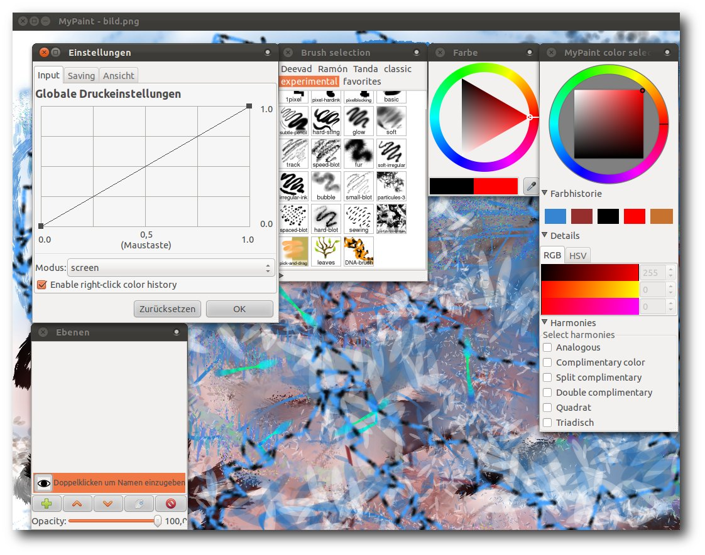

freiesMagazin März 2012
(ISSN 1867-7991)
Topthemen dieser Ausgabe
Objektorientierte Programmierung: Teil 1 – OOP in der PraxisDer Begriff der objektorientierten Programmierung (kurz OOP) existiert schon eine ganze Weile. Wer zuvor prozedural programmiert hat, erwischt sich beim Übergang zu OOP öfters dabei, wie er die früheren Funktionen einfach mit einer Klasse umgibt und dies als objektorientierte Programmierung verkauft. Die Artikelreihe soll an einem einfachen Beispiel zeigen, was man in so einem Fall besser machen könnte. (weiterlesen)
MyPaint – Zeichenprogramm für kreative Künstler
Wer im zeichnerischen Umfeld kreativ begabt ist, wird sich vielleicht einmal fragen, wie er seine bisherigen Zeichnungen auf Papier in eine digitale Variante transformiert. Die hardwareseitigen Werkzeuge, wie Grafiktablets, stehen bereits seit längerem zur Verfügung. Nun fehlt lediglich eine geeignete Software, die den Künstler möglichst umfassend in seinem Schaffensprozess unterstützt. Die meisten werden bei Grafikerstellung zunächst an GIMP, Krita oder das kommerzielle Photoshop denken. Eine eher unbekannte, aber dennoch durchaus leistungsfähige Software für diesen Zweck, stellt in diesem Zusammenhang MyPaint dar. (weiterlesen)
OpenStreetMap – Eine virtuelle Welt gedeiht
Mit „OpenStreetMap – GoogleMaps-Klon oder doch mehr?“ wurde bereits in freiesMagazin 11/2008 das OpenStreetMap-Projekt vorgestellt, das nach dem Wiki-Prinzip eine ganze Weltkarte erstellt, die jedermann nutzen und verbessern darf. Doch drei Jahre sind eine lange Zeit, gerade für freie Projekte. Hier folgt nun das Update, wie sich die Welt seither verändert hat. (weiterlesen)
Zum Index
Inhalt
Linux allgemein
Der Februar im Kernelrückblick
Anleitungen
Objektorientierte Programmierung: Teil 1 – OOP in der Praxis
Der Apache-Webserver
32-Bit-Chroot-Umgebung unter Debian
Selbstgebacken 2: Flickwerk
Software
MyPaint – Zeichenprogramm für kreative Künstler
Community
OpenStreetMap – Eine virtuelle Welt
Rezension: Einstieg in Eclipse 3.7
Rezension: Head First Design Patterns
Magazin
Editorial
Fünfter Programmierwettbewerb
Veranstaltungen
Konventionen
Impressum
Zum Index
Editorial
Fünfter freiesMagazin-Programmierwettbewerb
Damit sich niemand in der Ferienzeit im April langweilen muss und weil wir die Zeit bis zum nächsten größeren freiesMagazin-Programmierwettbewerb, der meistens im Oktober stattfindet, sinnvoll überbrücken wollen, haben wir Anfang März den fünften freiesMagazin-Programmierwettbewerb gestartet. Dieses Mal geht es nicht um ein theoretisches Spiel, sondern um eine reale Anwendung. Gesucht wird ein Wortwolken-Generator, der Texte einliest, die Worthäufigkeit zählt und alles als Wortwolke ausgibt. Vor allem die Darstellung der Wortwolke soll den Reiz der Programmieraufgabe ausmachen. Alle weiteren Informationen finden Sie im zugehörigen Artikel.Ergebnisse der Autorenrichtlinien-Umfrage
Letzten Monat [1] warben wir im Editorial unter anderem um neue Autoren. Es haben sich ein paar Helfer gemeldet, sodass Sie die nächsten Monate wieder regelmäßig mit Lesestoff versorgt werden sollten. Ein ehemaliger potentieller Autor [2] stellte die These in den Raum, dass unsere Autorenrichtlinien [3] zu einschränkend sind und sich daher nur wenige finden, die für freiesMagazin schreiben wollen. Um das zu überprüfen, hatten wir Anfang des Monats eine Umfrage auf unserer Webseite gestartet [4]. Diese lief Ende Februar aus, sodass die Ergebnisse nun vorliegen. Insgesamt haben sich 159 Menschen an der Umfrage beteiligt. Diese Gruppe unterteilt sich in 69 Autoren (43,4 %) und 90 reine Leser (57,6 %). Von der gesamten Gruppe finden 135 Personen (85 %) unsere Autorenrichtlinien genau richtig, 18 (12,5 %) zu streng und immerhin noch 4 Personen (2,5 %) nicht streng genug. Die Gruppe, die die Autorenrichtlinien genau richtig findet, teilt sich in 78 reine Leser (86,7 % von 90) und 57 Autoren (82,6 % von 69). Diese Zahl ist uns wichtig, da sie zeigt, dass die Autorenrichtlinien für einen Großteil der Leser und der Autoren akzeptabel und sinnvoll sind. Wir denken dies auch (sonst gäbe es die Richtlinien nicht) und versuchen so, eine durchgängig gute Qualität im Magazin zu halten. Dennoch haben wir auch etwas Feedback mitgenommen, sodass die Autorenrichtlinien ein wenig überarbeitet wurden. Größte Neuerung ist eine Kurzübersicht am Anfang der Richtlinien, die grob erläutern soll, worauf es uns ankommt, wenn jemand für freiesMagazin schreiben will.-in oder nicht -in?
Bei der Diskussion zu den Autorenrichtlinien kam auch wieder die betagte Frage nach der Anrede von Lesern, Nutzern und Autoren auf [5] [6]. Konkret ging es darum, ob man die weiblichen Leser/Nutzer/Autoren explizit durch ein angehängtes „-innen“ erwähnen sollte. Auch neutrale Formen wie Lesende, Nutzende und Autorende (nicht ernst gemeint!) wurden vorgeschlagen. Das Thema ist nicht neu und wurde von uns vor zweieinhalb Jahren bereits im Editorial in freiesMagazin 09/2009 angesprochen [7]. Die Resonanz auf die Diskussion kann man sich einen Monat später in den Leserbriefen anschauen [8]. Die meisten Leser (und explizit auch Leserinnen) sprachen sich gegen eine Unterscheidung aus. Wir halten dies natürlich auch weiterhin so, aber vielleicht haben sich die Meinungen dazu inzwischen ja geändert. Schreiben Sie uns in den Kommentaren über den Link am Ende des Artikels oder direkt per E-Mail an[1] http://www.freiesmagazin.de/freiesMagazin-2012-02
[2] http://www.freiesmagazin.de/20120205-februarausgabe-erschienen#comment-2448
[3] http://www.freiesmagazin.de/mitmachen#autoren
[4] http://www.freiesmagazin.de/20120208-was-halten-sie-von-den-autorenrichtlinien
[5] http://www.freiesmagazin.de/node/263/results#comment-2480
[6] http://www.freiesmagazin.de/node/263/results#comment-2465
[7] http://www.freiesmagazin.de/freiesMagazin-2009-09
[8] http://www.freiesmagazin.de/freiesMagazin-2009-10
Das Editorial kommentieren
Zum Index
Der Februar im Kernelrückblick
von Mathias Menzer Basis aller Distributionen ist der Linux-Kernel, der fortwährend weiterentwickelt wird. Welche Geräte in einem halben Jahr unterstützt werden und welche Funktionen neu hinzukommen, erfährt man, wenn man den aktuellen Entwickler-Kernel im Auge behält.Linux 3.3
Mit der zweiten Vorabversion [1] für Linux 3.3 ließ Torvalds sich etwas mehr Zeit. Einen Grund gab es dafür nicht, außer dass er nicht daran gedacht habe. Das Ergebnis war dann ein etwas größeres Päckchen, das mehr an einen -rc3 erinnert. Die Änderungen verteilen sich breitflächig über den gesamten Kernel, nur wenig sticht hervor. Die Aufräumarbeiten in Kroah-Hartmans tty-Bereich halten an und verschlugen nun die 8250-Treiber für die entsprechenden Chips zur Ansteuerung von seriellen Schnittstellen in ein eigenes Unterverzeichnis. Der Bereich mach-mx5 innerhalb der ARM-Architektur verschwand und wurde in den imx-Bereich migriert, es handelt sich dabei um Prozessoren aus dem Portfolio von Freescale. Torvalds wies auch darauf hin, dass er einige Merge Requests abgelehnt habe, die ihm außerhalb des Merge Window nicht angemessen erschienen. Die Änderungen des -rc3 [2] hielten sich in Grenzen. Einiges konnte sich ja schon im -rc2 finden, lediglich eine etwas größere Aktion, bei der ungenutzter DMA-Code aus dem ARM-Bereich entfernt wurde, stach auf der Änderungsstatistik ins Auge. Die Zahl der Commits war dennoch für eine dritte Vorabversion sehr gering. Dass das allerdings noch keinen Trend darstellt, zeigte Linux 3.3-rc4 [3], der wieder etwas über das eigentlich von Torvalds favorisierte 7-Tage-Schema hinausragte und doppelt so viele Commits wie sein Vorgänger aufwies. Für diese Verzögerung gab es jedoch eine Ausrede. Die Kernelentwickler hatten mit einem der fiesen Fehler zu tun, die nur unter speziellen Umständen auftreten und schon dadurch schwer zu finden sind. In diesem Fall kam es zu einer Fehlbehandlung von Fließkommawerten, wenn auf einem Prozessor mit AES-Befehlssatzerweiterung [4] ein 32-Bit-Kernel genutzt wird und gleichzeitig ein WLAN-Treiber die AES-Unterstützung nutzen möchte. Die Korrektur für diesen Fehler wurde in den Entwicklerkernel eingepflegt, soll jedoch in Kürze auch auf die betroffenen stabilen Kernel-Versionen zurückportiert werden. Ansonsten sah -rc4 recht eindrucksvoll aus: 44.000 gelöschte Zeilen Quelltext sind so weit im Entwicklungszyklus ungewöhnlich. Doch es handelt sich hier nicht um einen Fehler bei der Handhabung der Statistik-Werkzeuge von GIT, sondern um den Verlust zweier Treiber aus dem staging-Zweig. Während Intels GMA500-Treiber allerdings bereits seit längerem auch im DRM-Bereich vorliegt, lässt sich dessen Wegfall verschmerzen. pohmelfs [5] jedoch musste tatsächlich weichen, allerdings nicht für immer. Es wird bereits an einer überarbeiteten Version des Netzwerkdateisystems gebastelt, sodass man hier lediglich des sowieso nicht mehr gepflegten Codes verlustig wurde. Mit Linux 3.3-rc5 [6] scheint sich die Entwicklung etwas beruhigt zu haben, er kam auch innerhalb der 7-Tage-Frist. Hauptsächlich Fehlerkorrekturen und kleine Verbesserungen verteilen sich Querbeet über den ganzen Kernel, etwas mehr Aufmerksamkeit ließ man QLogics FibreChannel-Treiber qla2xxx und der Grafikkomponente von Samsungs System-on-Chip-Architektur EXYNOS angedeihen. Die in -rc4 begonnene Putzsaison ging aber weiter, Entwickler des Telekommunikationsgeräteherstellers ZTE [7] räumten am USB-option-Treiber ihre Geräte-IDs auf. Eigentlich nur eine Randbemerkung im Wust der Patches, wurde der ti3410-Treiber für die entsprechenden USB-Seriell-Chips um eine Geräte-ID erweitert, mittels derer die Geräte von Abbott Diabetes Care [8], einem Hersteller für Blutzuckermessgeräte, am PC angebunden werden können. Es wird vermutlich nicht viele Menschen geben, die auf diese Geräte angewiesen sind und zugleich Linux nutzen, doch das bemerkenswerte an Linux ist, dass unabhängig davon diese Möglichkeit trotzdem besteht.ASPM
Der Begriff ASPM (Active State Power Management), eine Energiespartechnik der PCIe-Schnittstelle, ist mittlerweile vielen geläufig. Der Grund liegt in den Problemen, die viele Notebookbesitzer mit der Laufzeit ihrer Akkus hatten, nachdem unter Linux 2.6.38 der ASPM-Code „optimiert“ wurde. Im November hatte man auch schon eine Möglichkeit gefunden, den Fehler zu beheben (siehe „Der November im Kernelrückblick“, freiesMagazin 12/2011 [9]), doch schaffte es der Patch leider nicht mehr in den Kernel 3.2. Dies wurde nun nachgeholt, die aktuell stabilen Kernelversionen 3.2.5 [10] und 3.0.20 [11] sollten nun Notebook-Nutzern wieder die bis 2.6.37 gewohnte kabellose Freiheit zurückgeben.Kroah-Hartman Pfeil rechts Linux Foundation
Wer aufmerksam die Patches studiert, dem fiel es schon vor der offiziellen Ankündigung [12] auf: Mit dem Kommentar „Greg's suse email address is dead“ [13] tauschte Greg Kroah-Hartman, eine der Hauptfiguren der Kernel-Entwicklung, seine bisherige E-Mail-Adresse im MAINTAINERS-File gegen eine neue aus, die der Linux Foundation [14] zugeordnet werden kann – er wurde in die Gruppe der „Linux Foundation fellows“ [15] aufgenommen [16]. Damit wird er nun, wie auch Hauptentwickler Linus Torvalds, von der Linux Foundation bezahlt und widmet sich nun ausschließlich der Kernel-Entwicklung. Wenn dies auch bei seinem bisherigen Arbeitgeber Novell bereits zutreffend war, ist er nun von den Zielen eines Unternehmens unabhängig. Im Kielwasser dieses Wechsels gab Kroah-Hartman dann auch einen kleinen Überblick über seine Tätigkeiten [17]. Die Hauptaufgabe sind hier die stabilen Kernel-Versionen, deren Versorgung mit Sicherheitsaktualisierungen und Fehlerkorrekturen sichergestellt sein will. Ein weiterer wichtiger Part sind einige Subsysteme des Kernels, darunter der USB-Bereich, der Hauptbereich der Treiber, die tty-Umgebung [18] und der staging-Zweig. Deren Weiterentwicklung und Pflege fällt ebenfalls Kroah-Hartman zu, sodass er hier als Maintainer (Betreuer) Patches von anderen Entwicklern begutachtet, einpflegt und in den Entwickler-Kernel überführt. Er entwickelt diese Bereich auch selbst weiter, bastelt neue Treiber oder verbessert bestehende Funktionen und sucht und behebt Fehler. Als Kopf des Linux Driver Project koordiniert er die Arbeiten dieser Gruppe, die Hardwareproduzenten bei der Programmierung von Linux-Treibern für ihre Produkte unter die Arme greift. Ein recht junges Projekt namens „Long Term Support Initiative“ soll einen Kernel bereitstellen und pflegen, der von Herstellern von Unterhaltungselektronik genutzt werden kann, und setzt dabei ebenfalls auf Kroah-Hartmans Unterstützung. Auch wenn er nun nicht mehr für Novell arbeitet, wird er trotzdem an SUSE Tumbleweed [19] weiterarbeiten. Links[1] https://lkml.org/lkml/2012/1/31/400
[2] https://lkml.org/lkml/2012/2/8/517
[3] https://lkml.org/lkml/2012/2/18/105
[4] https://de.wikipedia.org/wiki/AES_(Befehlssatzerweiterung)
[5] https://en.wikipedia.org/wiki/POHMELFS
[6] https://lkml.org/lkml/2012/2/25/71
[7] https://de.wikipedia.org/wiki/ZTE
[8] https://en.wikipedia.org/wiki/Abbott_Laboratories#Diabetes_Care
[9] http://www.freiesmagazin.de/freiesMagazin-2011-12
[10] https://lkml.org/lkml/2012/2/6/284
[11] https://lkml.org/lkml/2012/2/6/283
[12] http://www.linuxfoundation.org/news-media/announcements/2012/01/leading-kernel-maintainer-greg-kroah-hartman-joins-linux-foundation
[13] http://git.kernel.org/?p=linux/kernel/git/torvalds/linux.git;a=commit;h=879a5a001b62a020e074d460b3a7c0fd993f9832
[14] https://de.wikipedia.org/wiki/Linux_Foundation
[15] http://www.linuxfoundation.org/programs/developer/fellowship
[16] http://www.pro-linux.de/news/1/17987/greg-kroah-hartman-wechselt-zur-linux-foundation.html
[17] http://www.kroah.com/log/linux/what_greg_does.html
[18] https://de.wikipedia.org/wiki/TTY-Schnittstelle
[19] http://de.opensuse.org/Portal:Tumbleweed
| Autoreninformation |
| Mathias Menzer (Webseite) hält einen Blick auf die Entwicklung des Linux-Kernels und erfährt frühzeitig Details über interessante Funktionen. |
Diesen Artikel kommentieren
Zum Index
Objektorientierte Programmierung: Teil 1 – OOP in der Praxis
von Dominik Wagenführ Der Begriff der objektorientierten Programmierung (kurz OOP [1]) existiert schon eine ganze Weile. Wer zuvor prozedural programmiert hat, erwischt sich beim Übergang zu OOP öfters dabei, wie er die früheren Funktionen einfach mit einer Klasse umgibt und dies als objektorientierte Programmierung verkauft. Die Artikelreihe soll an einem einfachen Beispiel zeigen, was man in so einem Fall besser machen könnte. Hinweis: Für den Artikel wird erwartet, dass man weiß, was Klassen, Interfaces, Attribute und Operationen sind. Es schadet auch nicht, ein paar Dinge über Unified Modeling Language (UML [2]) zu wissen, wobei die UML-Diagramme auch ohne großes Vorwissen verstanden werden können.Einleitung
Bevor auch nur ein Satz zur „richtigen“ Anwendung von objektorientierter Programmierung fällt, soll vorausgeschickt werden, dass es keine absolut richtige Programmierung gibt. Ähnlich wie bei Buchautoren sind Programmierer und deren Programmierstile sehr verschieden. Stellt man zehn Entwicklern eine (komplexe) Aufgabe, kann man sicher sein, dass man zehn verschiedene Lösungen erhalten wird und von jeder wird der Entwickler in der Regel auch sagen, dass sie gut sei. Dennoch haben sich im Laufe der Zeit verschiedene Programmierparadigmen und -muster herausgebildet, die allgemein als sinnvoll anerkannt werden. Zu dem Thema gibt es entsprechend viele Bücher, am bekanntesten ist wahrscheinlich das Buch der „Gang of Four“ [3] Erich Gamma, Richard Helm, Ralph Johnson und John Vlissides namens „Design Patterns. Elements of Reusable Object-Oriented Software“ [4]. Das Buch gibt es auch auf Deutsch unter dem Titel „Entwurfsmuster: Elemente wiederverwendbarer objektorientierter Software“ [5] und beschreibt zahlreiche Entwurfsmuster, die beim Design objektorientierter Software benutzt werden können. Neben diesem Buch wurde für die Artikelreihe auch noch auf das sehr gute „Head First Design Patterns“ von Eric Freeman, Elisabeth Freeman, Bert Bates und Kathy Sierra [6] zurückgegriffen, welches ebenfalls auf Deutsch unter dem Titel „Entwurfsmuster von Kopf bis Fuß“ [7] erhältlich ist (siehe Rezension des Buches). Der Artikel soll entsprechend der Bücher nicht zwingend erklären, was gut und schlecht ist. Wenn eine Implementierung ein Problem löst, ist sie prinzipiell gut. Dennoch kann sie Nachteile haben, die es bei einem anderen Lösungsansatz nicht gegeben hätte. Dies hängt aber auch immer von den eigenen Präferenzen ab. Bei einem Programm, was man einmalig schreibt und welches danach ganz sicher nie wieder angepasst oder erweitert werden muss („Wegwerfsoftware“), ist es eher nicht sinnvoll, zu viel Zeit in ein gutes Software-Design zu stecken – außer man hat extrem viel Spaß daran. Bei langlebiger und wartungsintensiver Software, wie sie in der Regel bei Firmen zum Einsatz kommt, kann ein gutes Software-Design aber von Vorteil sein. Das Design wird mithilfe des UML-Programms Visual Paradigm [8] erstellt und dargestellt (siehe „UML-Programme im Test“, freiesMagazin 02/2012 [9]). Für die beispielhafte Umsetzung wird C++ benutzt. Jeder Leser kann die Aufgaben aber auch in anderen OOP-fähigen Sprachen wie Java, Python, Perl oder Ruby [10] nachprogrammieren. Im Laufe der Reihe wird das anfängliche Beispiel dann verbessert und soll immer unter folgenden Gesichtspunkten betrachtet werden:- Anzahl der Abhängigkeiten
- Verantwortlichkeit einer Klasse
- Bedeutung für Wartbarkeit und Erweiterbarkeit
Ein erstes Beispiel
Anforderungen
Als (anfangs schlechtes) Beispiel soll der vierte Programmierwettwerb von freiesMagazin herhalten [11]. Für diesen wurde ein Beispiel-Bot geschrieben, der den Teilnehmern als Sparringpartner diente. Dieser soll hier etwas vereinfacht nachprogrammiert werden, sodass er folgende Anforderungen erfüllt:- Spielverwaltung und Bot getrennt
- Einlesen von Benutzereingaben (Zahlen zwischen 0 und 1000)
- Antwort des Bots nach einer bestimmten Strategie, die im Programm per Kommandozeile ausgelesen wird
- Drei vordefinierte Strategien:
- immer annehmen
- immer ablehnen
- Annahme, wenn größer gleich 200. Wenn dreimal nacheinander kleiner 200, dann immer Ablehnung; wenn dreimal nacheinander größer als 700, dann immer Annahme.
- Bot soll angenommene Punkte zählen und am Ende ausgeben
Naive Designumsetzung
Wenn man sich keine großen Gedanken über eine Umsetzung macht bzw. einfach sehr faul ist, erstellt man zwei Klassen. Eine Klasse Game, welche die Spielverwaltung und Erstellung des Bots übernimmt, und eine Klasse Bot, welche die Strategie bestimmt und die Punkte zählt. Dies war auch der erste Ansatz für den Beispielbot des Programmierwettbewerbs, woraus dann auch die Idee für die Artikelreihe entstanden ist.Das Software-Design der naiven Umsetzung.
Klassenaufteilung
Um sich klar zu machen, welche Aufgabe eine Klasse hat, kann man sogenannte CRC-Karten einsetzen (Class-Responsibility-Collaboration-Karten [12]). Diese enthalten den Klassennamen, die Verantwortlichkeit und alle anderen Objekte, die die Klasse benötigt. Für das erste Beispiel sähen diese so aus:- Klasse:
- Bot
- Benötigt:
- –
- Verantwort.:
- nimmt Angebote an oder lehnt sie je nach Strategie ab; zählt die angenommenen Punkte
- Klasse:
- Game
- Benötigt:
- Bot
- Verantwort.:
- erstellt Bot und setzt die Strategie (aus Konsolenparameter); liest Benutzereingabe und fragt Bot nach Annahme oder Ablehnung
Abhängigkeitsanalyse
Vorwort
Wieso sind Abhängigkeiten überhaupt wichtig? Stark vernetzte Software (das heißt eine mit vielen Verbindungen zwischen den Klassen) führt früher oder später zu einem nicht mehr überschaubaren Wust an Code. So kann man irgendwann nicht mehr sagen, welche Teile einer Software unabhängig voneinander arbeiten können – zum Beispiel in Form von Bibliotheken. Daher bemüht man sich in der Regel, die Abhängigkeiten zwischen einzelnen Softwareteilen (Komponenten) gering zu halten. Nicht in allen Sprachen wirken sich die Abhängigkeiten der Software unbedingt negativ aus. C++ ist aber ein sehr schönes Beispiel, da hier die Abhängigkeiten direkten Einfluss auf die Generierung nehmen. Hat man eine Software, die aus 50 Bibliotheken und Hunderten von Klassen besteht, die alle kreuz und quer miteinander vernetzt sind, führt die Änderung einer einzigen Header-Datei oft dazu, dass alle Klassen und alle Bibliotheken neu übersetzt werden müssen. Dies versucht man normalerweise zu vermeiden, da es unnötigen Zeitaufwand bedeutet (was mit hinausgeworfenem Geld gleichzusetzen ist). Zusätzlich ist eine Software mit vielen Abhängigkeiten nur noch schwer zu verstehen, da es bei kleinen Änderungen bereits unerwünschte Seiteneffekte geben kann. Auch unerwünschte zyklische Abhängigkeiten [13] können so leichter auftreten. Ebenso werden Unit-Tests (oder Modul-Tests [14]) durch zu viele Abhängigkeiten erschwert. Hinweis: Mit Abhängigkeit ist jede Verbindung einer Klasse zu einer anderen gemeint und nicht eine Abhängigkeit im strengen UML-Sprachgebrauch [15].Analyse
Welche Abhängigkeiten ergeben sich also aus den zwei Klassen? Die Klasse Bot hat nur Abhängigkeiten zu Standard-Datentypen wie string und int, die nicht ins Gewicht fallen. Die Klasse Game ist direkt von Bot abhängig, da der Bot von ihr erstellt und danach benutzt wird. Im UML-Modell wird dies dann mittels einer Abhängigkeitsbeziehung vom Stereotyp instantiate dargestellt.Vor- und Nachteile
Wie man an den CRC-Karten sieht, haben die zwei Klassen Bot und Game nicht nur eine Aufgabe, sondern mehrere. Dies ist nicht immer, aber oft ein Hinweis darauf, dass man seine Klassen falsch „geschnitten“ hat. Man hätte es aber sogar noch schlimmer machen und die Benutzereingabe auch direkt in Bot auslesen können, ebenso wie die komplette Spielverwaltung. Dann wäre die Klasse aber ein echter Gemischtwarenladen an Aufgaben und es gäbe gar keine klare Verantwortlichkeit der Klasse Bot mehr. (So ein Objekt nennt man gemeinhin Gott-Objekt [16].) Der Nachteil des obigen Designs ist also, dass die Klassen zu viele Aufgaben übernehmen. So ist es eher seltsam, dass die Klasse Game den Bot erstellt. Ebenso kann man überlegen, ob es sinnvoll ist, dass Game die Interpretation der Benutzereingaben übernimmt. In der Artikelreihe soll sich aber mehr auf den Bot und dessen Strategien konzentriert werden. Aber auch dieser hat mehrere Verantwortlichkeiten, wie man sieht. Ein weiterer Nachteil ist, dass die Übersicht in der Klasse Bot leidet, wenn es sehr viele Strategien gibt. Diese werden durch zig if-Abfragen anhand der Zeichenkette mStrategy in der Operation acceptOffer unterschieden. Wenn man also 30 Strategien hat, die mitunter um einiges komplexer sind als die Beispielstrategien, wird das extrem unübersichtlich. Daneben muss man z. B. für die Strategie, dass man ein Angebot immer annimmt, das Attribut mNumAcceptInRow speichern, auch wenn man es in dem Fall gar nicht benötigt. Der dritte Nachteil ist, dass die Bibliothek libgame neu übersetzt werden muss, wenn sich in der Deklaration von Bot etwas ändert. Dies ergibt sich aus der direkten Abhängigkeit der Klassen. (Dies spielt aber in manchen Sprachen, wie oben geschrieben, keine große Rolle.) Als Folge davon wäre auch ein Unit-Test der Klasse Game nur schwer machbar, d. h. wenn man die Klasse Game testet (z. B. die Operation start), testet man automatisch auch immer die Klasse Bot mit. (In C++ hätte man nur die Möglichkeit, den Include- und Library-Pfad anzupassen, um eine neue Implementierung unterzuschieben. Bei anderen Sprachen kann man die Klasse Bot und dessen Methoden zur Laufzeit überschreiben [17].) Der Vorteil der Implementierung ist natürlich ihre Einfachheit. Es gibt nur zwei Klassen und alles ist schön übersichtlich. Leicht erweiterbar oder wartbar ist es auf Dauer aber nicht. Die C++-Implementierung der zwei Klassen kann als Archiv heruntergeladen werden: oop1-beispiel.tar.gz.Ableitungen noch und nöcher
Ein sehr mächtiges Mittel der objektorientierten Programmierung ist die Ableitung bzw. Generalisierung [18]. Mit ihrer Hilfe kann man bereits bestehende Klassen um weitere Eigenschaften (Attribute und Operation) erweitern. Dieses Mittel soll benutzt werden, um den Nachteil zu beheben, dass die Methode acceptOffer der Klasse Bot bei sehr vielen Strategien zu unübersichtlich wird.Design
Das heißt, dass man eine Basisklasse BaseBot erstellt und die konkreten Ableitungen davon die jeweilige Strategie umsetzen. Damit nicht jeder konkrete Bot die Punkte zählen muss, übernimmt die Basisklasse diese Aufgabe.Die drei Generalisierungen des BaseBot.
Klassenaufteilung
Die CRC-Karten schauen nun wie folgt aus:- Klasse:
- BaseBot
- Benötigt:
- –
- Verantwort.:
- Basisklasse, welches die angenommenen Punkte zählt
- Klasse:
- AcceptBot
- Basisklasse:
- BaseBot
- Benötigt:
- –
- Verantwort.:
- nimmt ein Angebot immer an
- Klasse:
- DeclineBot
- Basisklasse:
- BaseBot
- Benötigt:
- –
- Verantwort.:
- lehnt ein Angebot immer ab
- Klasse:
- VariableBot
- Basisklasse:
- BaseBot
- Benötigt:
- –
- Verantwort.:
- entscheidet variabel, ob ein Angebot abgelehnt oder angenommen wird
- Klasse:
- Game
- Benötigt:
- BaseBot, AcceptBot, DeclineBot, VariableBot
- Verantwort.:
- erstellt den richtigen Bot; liest Benutzereingabe und fragt Bot nach Annahme oder Ablehnung
Abhängigkeiten
Man hat zwar nun die vorherige Klasse Bot in verschiedene konkrete Klassen aufgeteilt, dadurch erhält die Klasse Game aber auch mehr Abhängigkeiten, da sie die drei konkreten Bots alle erzeugen muss. Daneben hat man auch eine Abhängigkeit zur Basisklasse BaseBot, da man die Punkte am Ende ausgeben will und getPoints aufrufen muss. Die konkreten Bots hängen natürlich von der Basisklasse BaseBot ab.Vor- und Nachteile
Die oben stehenden Bot-Klassen haben nun alle nur noch eine Verantwortlichkeit, was sehr gut ist. Daneben ist es schön, dass man, um eine neue Strategie einzubringen, nur die Klasse BaseBot ein weiteres Mal ableiten muss. Ein Nachteil jetzt ist aber die Erweiterbarkeit. Will man einen neuen Bot hinzufügen, muss man die Klasse Game entsprechend anpassen, da sie den richtigen Bot erstellen muss. Wenn man das oft genug macht, fragt man sich, ob es eine gute Idee war, Game und die jeweiligen Bot-Implementierungen so eng miteinander zu verknüpfen. Ebenso leidet aber auch die Wartbarkeit. Ändert sich eine der konkreten Bot-Deklarationen (weil z. B. ein Bot für seine Strategie weitere Attribute benötigt), muss auch die Bibliothek libgame neu übersetzt werden. Die Übersichtlichkeit ist zwar noch gewährleistet, man stelle sich aber vor, der Bot hätte noch zwei andere Eigenschaften in jeweils drei Ausprägungen, die in verschiedenen Kombinationen auftreten können. Dann müsste man im Extremfall 27 (3 hoch 3) Klassen erstellen, die alle diese Möglichkeiten abbilden.Implementierung
Die C++-Implementierung der obigen Klassen kann als Archiv heruntergeladen werden: oop2-beispiel.tar.gz.Ausblick
Im nächsten Teil soll das erste Entwurfsmuster vorgestellt werden, welches im Design dieses Teiles bereits ein bisschen benutzt wurde. Links[1] https://secure.wikimedia.org/wikipedia/de/wiki/Objektorientierte_Programmierung
[2] http://www.uml.org/
[3] https://de.wikipedia.org/wiki/Entwurfsmuster_(Buch)
[4] http://www.amazon.de/Patterns-Elements-Reusable-Object-Oriented-Software/dp/0201633612/
[5] http://www.amazon.de/Entwurfsmuster-Elemente-wiederverwendbarer-objektorientierter-Software/dp/3827321999/
[6] http://www.amazon.de/Head-First-Design-Patterns-Freeman/dp/0596007124/
[7] http://www.amazon.de/Entwurfsmuster-von-Kopf-bis-Fuß/dp/3897214210/
[8] http://www.visual-paradigm.com/product/vpuml/
[9] http://www.freiesmagazin.de/freiesMagazin-2012-02
[10] https://secure.wikimedia.org/wikipedia/de/wiki/Liste_objektorientierter_Programmiersprachen
[11] http://www.freiesmagazin.de/20111001-vierter-freiesmagazin-programmierwettbewerb-gestartet
[12] https://secure.wikimedia.org/wikipedia/de/wiki/Class-Responsibility-Collaboration-Karten
[13] https://de.wikipedia.org/wiki/Zirkuläre_Abhängigkeit
[14] https://de.wikipedia.org/wiki/Modultest
[15] https://de.wikipedia.org/wiki/Abhängigkeitsbeziehung_(UML)
[16] https://secure.wikimedia.org/wikipedia/de/wiki/God_object
[17] https://secure.wikimedia.org/wikipedia/de/wiki/Mock-Objekt
[18] https://de.wikipedia.org/wiki/Generalisierung_(UML)
| Autoreninformation |
| Dominik Wagenführ (Webseite) ist C++-Software-Entwickler und hat täglich mit Software-Design zu tun. Dabei muss er sich immer Gedanken machen, dass seine Software auch in Zukunft einfach wartbar und leicht erweiterbar bleibt. |
Diesen Artikel kommentieren
Zum Index
Der Apache-Webserver
von Werner Ziegelwanger Der Apache-Webserver ist ein freier und laut Wikipedia [1] der am häufigsten verwendete Webserver. Der folgende Artikel soll zeigen, wie Apache funktioniert und wie man mit ihm dynamische Seiten in PHP, Perl, Python und JSP anzeigen lassen kann. Ein Webserver funktioniert folgendermaßen: Der Benutzer gibt in der Adresszeile seines Browsers eine Adresse ein. Diese wird als URL (Uniform Resource Locator) bezeichnet. Über diese URL werden zwei Dinge ermittelt:- die Adresse eines Computers im Internet, auch FQDN (Fully Qualified Domain Name) genannt,
- eine Ressource, die von diesem Rechner angezeigt werden soll.
http://www.freiesmagazin.de/magazin
Hierbei entspricht www.freiesmagazin.de dem FQDN und /magazin der Ressource.
Zur Erklärung soll hier erwähnt werden, dass der FQDN von rechts nach
links gelesen wird. Das heißt, in der Domain de (Deutschland) gibt
es einen Rechner, der die Seite von freiesMagazin hostet, und mit
www gibt man an, dass man die Ressource in dieser Subdomain sucht.
Wird keine Ressource angegeben, so wird standardmäßig die index-Datei
angezeigt. Der Ordner, in dem die Ressource gesucht wird, wird
üblicherweise bei der Installation eines Webservers angelegt und
beherbergt die Webseiten, die dieser Rechner nach außen anzeigt.
Die Ressource, die hier angefordert wird, heißt magazin. Dies kann nun
eine Datei mit dem Namen magazin.html sein, ein Ordner namens
magazin, der eine Datei namens index.html enthält oder ähnliches.
All das braucht der Anwender nicht zu wissen. Der Webserver liefert
die gesuchte Ressource. Sollte er sie nicht finden, gibt er eine
Fehlerseite zurück.
http://www.freiesmagazin.de/void liefert so zum Beispiel die
Seite, welche als Fehlerseite beim Webserver eingestellt worden ist.
Üblicherweise liefert eine nicht gefundene Ressource eine
404-Fehlerseite.
Das Kernstück des Apache-Webservers ist der httpd (Hypertext Transfer
Protocol Daemon). Im Prinzip macht dieser Daemon (laufender Prozess am
Webserver) nichts anderes als auf HTTP-Anfragen HTTP-Antworten zu
liefern. Diese Funktionalität kann durch Module ergänzt werden. Dieses
Modulkonzept ist mit ein Grund für die Popularität des
Apache-Webservers.
Es gibt zahlreiche Zusatzmodule; ein Beispiel wäre das PHP-Modul, welches
dem Server ermöglicht, PHP-Skripte auszuführen, wenn diese über eine
HTTP-Anfrage aufgerufen werden. Aber dazu später mehr.
Die Installation
Die Installation gestaltet sich sehr einfach. Man muss nur das Paket apache2 mit einem Paketmanager installieren. Um zu überprüfen, ob der Webserver läuft, gibt man einfach Folgendes in die Adressleiste des Browsers ein: http://localhost/. Wenn der Webserver läuft, erscheint nun eine Erfolgsmeldung. Diese Seite ist die Standardseite, die der Webserver nun anzeigt. Der Domainname localhost bzw. die Adresse 127.0.0.1 zeigen im Browser den eigenen Rechner. Der Server kann nach erfolgreicher Installation mit dem Befehl /etc/init.d/apache2 gestartet, gestoppt oder neu gestartet werden:# /etc/init.d/apache2 start
# /etc/init.d/apache2 stop
# /etc/init.d/apache2 restart
# /etc/init.d/apache2 stop
# /etc/init.d/apache2 restart
Die Konfiguration
Komplizierter wird es bei der Konfiguration. Es gibt dafür mehrere Konfigurationsdateien. Zu finden sind diese im Apache2-Ordner. Wo sich dieser Ordner befindet, ist von Distribution zu Distribution unterschiedlich. Alle hier angegebenen Informationen bezüglich der Ordnerstruktur beziehen sich auf Ubuntu.- httpd.conf
- Dies ist die Konfigurationsdatei des HTTP-Daemons. Diese Datei kann globale Konfigurationen beinhalten, ist aber meistens leer, da für die aktuellen Versionen des Apache-Webservers die apache2.conf-Datei zur globalen Konfiguration verwendet wird.
- apache2.conf
- Hier kann man globale Einstellungen für den Webserver vornehmen. Diese Datei ist sehr gut dokumentiert.
- envwars
- Diese Datei beinhaltet alle Umgebungsvariablen, die der Server benötigt.
- ports.conf
- Hier kann man einstellen, auf welchen Ports der Webserver lauschen soll. Standardmäßig wird nur auf Port 80 gelauscht. Dieser TCP-Port wird üblicherweise für das Hypertext Transfer Protokoll verwendet (HTTP).
- mods-available
- Dieser Ordner enthält Konfigurationsdateien für alle Module, die für den Webserver zur Verfügung stehen. Module können so individuell konfiguriert werden.
- mods-enabled
- Dieser Ordner enthält Links auf Konfigurationsdateien des mods-available-Ordners. Alle Module, von denen hier Links existieren, werden bei einem Start des Servers geladen.
Die erste Seite
Der Apache-Webserver verwendet sogenannte virtuelle Hosts. Das heißt, man kann auf einem Rechner beliebig viele Seiten hosten. Somit kann man mehrere virtuelle Hosts mit unterschiedlichen Servernamen anlegen; der Webserver vergleicht diese dann mit der vom Benutzer angegebenen URL und liefert die gewünschte Seite des zugehörigen Servernamens. Sollte der Servername nicht existieren, kann ein Standardseite angezeigt werden. Die virtuellen Hosts sind im sites-available-Ordner zu finden. Definiert wird ein Host in einer Textdatei. Bei einer neuen Installation des Webservers wurde bereits ein Standardhost angelegt, welcher durch eine Textdatei mit dem Namen default in diesem Ordner zu finden ist. Interessant sind hier die Elemente DocumentRoot und ErrorLog. DocumentRoot definiert einen Ordner, den dieser virtuelle Host nach außen zeigt. Das heißt, wenn man diesen Host im Browser anfragt, dann wird standardmäßig die Seite index.html aus diesem Verzeichnis an den Anwender geschickt und bei ihm im Browser angezeigt. Mit ErrorLog definiert man eine Logdatei, die alle Fehler für diesen Host protokolliert. So kann nun zum Beispiel dem virtuellen Server ein Name gegeben werden, indem die Zeile ServerName localhost nach der ersten Zeile eingefügt wird. Da der Ordner des Standardhosts /var/www ist (wie der Konfiguration entnommen werden kann), wird dort eine neue Seite erstellt. Dazu ändert man die bereits existierende HTML-Datei um, sodass sie folgenden Inhalt hat:<html>
<body>
<h1>Hallo Welt!</h1>
<p>Willkommen auf der neuen Homepage.</p>
<br/>
<p><a href="phpTest.php">PHP Testseite</a></p>
<p><a href="cgi-bin/perlTest.pl">Perl Testeite</a></p>
<p><a href="cgi-bin/pythonTest.py">Python Testseite</a></p>
</body>
</html>
Listing: index.html
Nach dem Speichern der Datei zeigt der Browser nun die neue Seite.
<body>
<h1>Hallo Welt!</h1>
<p>Willkommen auf der neuen Homepage.</p>
<br/>
<p><a href="phpTest.php">PHP Testseite</a></p>
<p><a href="cgi-bin/perlTest.pl">Perl Testeite</a></p>
<p><a href="cgi-bin/pythonTest.py">Python Testseite</a></p>
</body>
</html>
Die neue Übersichtsseite.
Module
Wie bereits erwähnt sind Module ein wichtiges Konzept beim Apache-Webserver. Bis jetzt kann der Server nur statische Seiten anzeigen. In Zeiten von Web 2.0 reicht das aber schon lange nicht mehr aus. Der Server soll nun auch auf Benutzerangaben reagieren und im besten Fall für den Benutzer individuelle Daten anzeigen. Erreicht wird dies üblicherweise durch Skripte. JavaScript ermöglicht zwar teilweise eine dynamische Webseite, jedoch wird dieses nur auf dem Rechner des Benutzers ausgeführt. Was benötigt wird, sind Skripte, die auf dem Server ausgeführt werden. Dazu gehören unter anderen PHP, Perl und Python. Der Server soll nun so angepasst werden, dass er diese Skriptsprachen unterstützt.PHP
Um die Funktionalität zu testen, wird zuerst eine neue Seite erstellt, die ein PHP-Skript enthält. Dazu wird eine neue Datei namens phpTest.php im Ordner /var/www/ mit folgendem Inhalt erstellt:<?php
echo "<h1>PHP Testseite</h1>";
phpinfo();
?>
Damit der Server in der Lage ist, PHP auszuführen, müssen folgende
Pakete installiert werden:
echo "<h1>PHP Testseite</h1>";
phpinfo();
?>
- libapache2-mod-php5
- php5-cli
- php5-common
- php5-cgi
Die typische PHP-Informationsseite.
Perl
Ähnlich wie beim Testen der PHP-Funktionalität legt man wieder zuerst eine neue Skriptdatei an, diesmal für ein Perl-Skript. Für Perl und Python benötigt man noch ein Verzeichnis, in dem diese Skriptdateien abgelegt werden können. Dazu legt man im Verzeichnis www ein Verzeichnis namens cgi-bin an. In diesem Verzeichnis erstellt man eine Datei mit dem Namen perlTest.pl. Die Dateiendung .pl ist für Perl-Skripte üblich. Der Inhalt der Datei lautet wie folgt:#!/usr/bin/perl
print "Content-type: text/html\r\n\r\n";
print "<h1>Perl Testseite</h1>";
print "Perl funktioniert mit diesem Webserver!";
Listing: perlTest.pl
Die neue Datei und auch das Verzeichnis benötigen Ausführungsrechte.
Danach installiert man das Perl-Modul libapache2-mod-perl2.
Nun ist Perl installiert, jedoch muss man den virtuellen Host noch
konfigurieren. Der virtuelle Host ist im Verzeichnis sites-available
zu finden. Der virtuelle Host default hat bereits eine Konfiguration
für den cgi-bin Ordner. Diese muss folgendermaßen geändert werden:
print "Content-type: text/html\r\n\r\n";
print "<h1>Perl Testseite</h1>";
print "Perl funktioniert mit diesem Webserver!";
ScriptAlias /cgi-bin/ /var/www/cgi-bin/
<Directory "/var/www/cgi-bin">
Options ExecCGI
AddHandler cgi-script cgi pl
</Directory>
Die erste Zeile definiert einen Alias, der auf das Verzeichnis mit den
Skripten zeigt. Die Zeile mit dem AddHandler definiert die
Dateiendungen, welche als Skript ausgeführt werden sollen (in diesem
Fall *.cgi und *.pl).
Nach einem Neustart zeigt der Browser das Ergebnis des Perl-Skripts.
<Directory "/var/www/cgi-bin">
Options ExecCGI
AddHandler cgi-script cgi pl
</Directory>
Die Perl-Testseite.
Python
Wieder erstellt man zuerst eine neue Skriptdatei im Ordner cgi-bin, mit dem Namen pythonTest.py und dem folgenden Inhalt:#!/usr/bin/python
def index():
return "<html><body><h1>Python Testseite</h1></br><Python funktioniert mit diesem Webserver!</body></html>"
Listing: pythonTest.py
Auch hier muss wieder sichergestellt werden, dass die Datei
Ausführungsrechte hat.
Danach installiert man noch das erforderliche Modul
libapache2-mod-python.
Zum Schluss muss eine weitere Änderung an den Konfigurationseinstellungen des
virtuellen Hosts vorgenommen werden. Dazu wird der folgende Abschnitt
hinzugefügt:
def index():
return "<html><body><h1>Python Testseite</h1></br><Python funktioniert mit diesem Webserver!</body></html>"
<Directory "/var/www/cgi-bin">
Options Indexes FollowSymLinks MultiViews
AllowOverride None
Order allow,deny
allow from all
AddHandler mod_python py
PythonHandler mod_python.publisher
PythonDebug on
</Directory>
Options Indexes FollowSymLinks MultiViews
AllowOverride None
Order allow,deny
allow from all
AddHandler mod_python py
PythonHandler mod_python.publisher
PythonDebug on
</Directory>
Auch Python funktioniert.
Mögliche Fehlerquellen
Beim Installieren und Konfigurieren eines Webservers kann es immer wieder zu Fehlern kommen. Probleme bereiten hier vor allem die Skriptsprachen. Zu allererst sollte überprüft werden, ob auch wirklich alle erforderlichen Module installiert worden sind. Ein nicht durchgeführter Neustart des Webservers ist ein möglicher Fehler. Skripte können auch in der Kommandozeile auf Funktionalität getestet werden (z. B. mit ./perlTest.pl). Hier sollte man auch überprüfen, ob das Ausführungsrecht gesetzt ist. Sollte das Skript im Browser trotzdem nicht angezeigt werden, hilft das Log weiter. Im Ordner /var/log/apache2 findet man alle Log-Dateien.Tomcat
Tomcat [2] wird benötigt, um dem Webserver die Funktionalität für die Java Servlets und Java Server Pages hinzuzufügen.Installation
Folgende Pakete sind mit einem Paketmanager zu installieren:- tomcat7
- tomcat7-admin
- tomcat7-docs
# /etc/init.d/tomcat7 start
# /etc/init.d/tomcat7 stop
# /etc/init.d/tomcat7 restart
Die erfolgreiche Installation kann man mit folgender URL im Browser
testen: http://localhost:8080
Nun sollte eine Seite mit der Meldung „It works!“ erscheinen.
# /etc/init.d/tomcat7 stop
# /etc/init.d/tomcat7 restart
Konfiguration
Der Apache-Tomcat kann mit den xml-Dateien in /var/lib/tomcat7/conf konfiguriert werden. Interessant ist hier die Datei tomcat-users.xml. Hier kann man Benutzer und Benutzerrollen für den Tomcat-Manager konfigurieren. Um diesen Manager nutzen zu können, legt man eine neue Benutzerrolle und einen neuen Benutzer an:<role rolename="manager-gui" />
<user username="manager" password="meinpasswort" roles="manager-gui"/>
Nachdem diese Zeilen hinzugefügt worden sind, muss der Tomcat neu
gestartet werden. Nun kann man mit diesem neu angelegten Benutzer die
Manager-GUI des Tomcat nutzen:
http://localhost:8080/manager
<user username="manager" password="meinpasswort" roles="manager-gui"/>
Der Tomcat Manager zeigt alle laufenden Applikationen.
Die Manager-GUI zeigt alle laufenden Applikationen. Man kann sie stoppen, neu starten oder löschen. Ganz unten zeigt diese GUI noch Eingabefelder, um neue Applikationen zu laden und laufen zu lassen. Eine zuvor erstellte Java-Webapplikation, die man über eine IDE (z. B. Netbeans oder Eclipse) erstellt und als .war-Datei kompiliert hat, kann man hier hinzufügen. Eine Beispiel-Webapplikation wird unter folgendem Link bereitgestellt: JavaTest.war. Nach dem erfolgreichen Deployen kann man die Seite über folgenden Link oder auf einen Klick auf „JavaTest“ in der Manager GUI aufrufen: http://localhost/JavaTest
Zum Abschluss noch etwas JSP …
Nun sollte eine Erfolgsseite im Browser zu sehen sein. Sie zeigt unter anderem die verwendete Browserversion und Betriebssystem. Außerdem noch die IP-Adresse. Die Seite, die angezeigt wird, besteht aus folgendem Code und ist in einer JSP Datei im .war-Archiv zu finden:
<%@page contentType="text/html" pageEncoding="UTF-8"%>
<!DOCTYPE html>
<html>
<head>
<meta http-equiv="Content-Type" content="text/html; charset=UTF-8">
<title>JSP Testseite</title>
</head>
<body>
<h1>JSP Testseite!</h1>
Your browser is: <%= request.getHeader("User-Agent") %><br>
Your IP address is: <%= request.getRemoteAddr() %><br>
</body>
</html>
Listing: index.jsp
Links<!DOCTYPE html>
<html>
<head>
<meta http-equiv="Content-Type" content="text/html; charset=UTF-8">
<title>JSP Testseite</title>
</head>
<body>
<h1>JSP Testseite!</h1>
Your browser is: <%= request.getHeader("User-Agent") %><br>
Your IP address is: <%= request.getRemoteAddr() %><br>
</body>
</html>
[1] http://de.wikipedia.org/wiki/Apache_HTTP_Server
[2] http://tomcat.apache.org/
[3] https://help.ubuntu.com/10.04/serverguide/C/httpd.html
[4] http://radekb.blogspot.com/2010/02/how-to-install-tomcat-in-kubuntu.html
[5] http://www.ubuntugeek.com/how-to-install-apache2-webserver-with-phpcgi-and-perl-support-in-ubuntu-server.html
| Autoreninformation |
| Werner Ziegelwanger (Webseite) hat Game Engineering und Simulation studiert und arbeitet derzeit als Java Web-Entwickler. |
Diesen Artikel kommentieren
Zum Index
32-Bit-Chroot-Umgebung unter Debian einrichten
von Hans-Joachim Baader AAuf einem 64-Bit-Debian-System kann es manchmal nützlich sein, eine 32-Bit-Umgebung zur Hand zu haben. Das lässt sich mit debootstrap und schroot schnell und einfach erreichen. Das Verfahren ist aber auch für 32-Bit-Systeme und teilweise auch für andere Distributionen geeignet. Redaktioneller Hinweis: Der Artikel „32-Bit-Chroot-Umgebung unter Debian einrichten“ erschien erstmals bei Pro-Linux [1].Vorwort
Die meisten 32-Bit-Programme lassen sich unter einem 64-Bit-Linux problemlos ausführen. Auch unter Debian, das derzeit noch nicht multiarch-fähig ist, ist es meist möglich. Gegebenenfalls muss man ein paar 32-Bit-Bibliotheken nachinstallieren, die als Pakete vorliegen. Liegt die 32-Bit-Software jedoch als DEB-Paket vor und besitzt noch Abhängigkeiten zu anderen 32-Bit-Paketen, dann kann es unmöglich werden, dieses Paket sauber zu installieren. Eine mögliche Abhilfe sind die mittlerweile allgegenwärtigen virtuellen Maschinen. Durch ihre weitgehende Isolation vom Host-System sind sie zwar sehr sicher, machen aber auch einige Umstände. Eine schlankere Alternative sind Chroot-Umgebungen. Es ist aber nicht leicht, eine solche Umgebung von Hand einzurichten. Alle auf Debian oder Ubuntu beruhenden Distributionen bringen jedoch Werkzeuge mit, die den Vorgang auf wenige Handgriffe reduzieren.Chroot-Umgebung installieren
Das grundlegende Werkzeug heißt debootstrap. Es installiert eine beliebige Version der Distribution von einem beliebigen Server in ein beliebiges Verzeichnis. Die einzige nötige Vorbereitung ist, ein Verzeichnis zu wählen, in dem genug Platz ist (für eine ernsthafte Nutzung wird man sicherlich 500 MB plus die Größe der zusätzlichen Programme und Daten benötigen). Man kann beispielsweise ein Verzeichnis /var/chroots anlegen und in dieses wechseln:# mkdir /var/chroots
# chown <user> /var/chroots
$ cd /var/chroots
Nun genügt der folgende Befehl, vorausgesetzt, das Paket
debootstrap ist installiert:
# chown <user> /var/chroots
$ cd /var/chroots
# debootstrap --arch i386 wheezy wheezy-i386 http://ftp.de.debian.org/debian
Hier ist --arch i386 die Architektur (32-Bit). Wer es braucht,
kann natürlich auch eine 64-Bit-Umgebung installieren. wheezy ist
der Name der Distribution, für Debian sind hier jeweils die stabilen
und Testversionen möglich (zur Zeit lenny, squeeze, wheezy,
sid), für Ubuntu z. B. natty, oneiric und precise.
wheezy-i386 ist das Verzeichnis, das von debootstrap unterhalb des
aktuellen Verzeichnisses angelegt wird. Optional kann man dahinter
noch einen Distributionsspiegelserver angeben. Wer ein eigenes
Repository oder einen Proxy (z. B. apt-proxy-ng) betreibt, kann die
Zeile auch abändern zu
# debootstrap --arch i386 wheezy wheezy-i386 http://proxy:3142/debian
oder
# debootstrap --arch i386 hardy hardy-i386 http://proxy:3142/ubuntu
oder ähnlich. Die gesamte Chroot-Installation läuft vollautomatisch
und dauert etwa eine halbe bis eine Stunde.
Das auf den Bildschirm ausgegebene Log
sollte abschließend mit der letzten Zeile Erfolg melden:
I: Base system installed successfully.
Manuelle Konfiguration
Mit dem folgenden Befehl kann man die Umgebung bereits nutzen, jedoch vorerst nur als Root:# chroot /var/chroots/wheezy-i386
Man kann sich zunächst etwas mehr Komfort verschaffen, indem
man die Konfigurationsdateien wie /etc/profile anpasst (ggf.
einfach vom Host kopieren). Insbesondere sollte die Zeit richtig
eingestellt werden mittels
# cp /usr/share/zoneinfo/Europe/Berlin /etc/localtime
Empfehlenswert ist auch, gleich ein
export DISPLAY=:0
in /etc/profile einzutragen, wenn man X-Programme in der Umgebung
starten will. Und es dürfte sinnvoll sein, den Shell-Prompt so zu
setzen, dass man gleich weiß, in welcher Umgebung man sich befindet.
Man sollte aber niemals den Hostnamen der Chroot-Umgebung setzen.
Das würde sich auf den Host-Rechner auswirken und Chaos auslösen.
Nun kann man der Minimalumgebung bereits Pakete hinzufügen. Am
wichtigsten dürfte es sein, das Paket locales zu installieren, um
die Spracheinstellung vornehmen zu können und nervende Meldungen zu
vermeiden:
# apt-get install locales
# echo "de_DE.UTF-8 UTF-8" >> /etc/locale.gen
# locale-gen
Wer es nicht bemerkt hat: Bei der Installation des Paketes kam folgende
Fehlermeldung:
# echo "de_DE.UTF-8 UTF-8" >> /etc/locale.gen
# locale-gen
Can not write log, openpty() failed (/dev/pts not mounted?)
Diese ist allerdings nicht fatal. Schwerer wiegende Meldungen liefern
Versuche, die Programme df oder ps aufzurufen. Der Grund ist klar:
Es fehlen die Datei /etc/mtab, das Verzeichnis /dev
und die Dateisysteme /proc und /sys.
Diese lassen sich dank Bind-Mounts leicht einrichten.
Auf diese Weise kann man auch einen einfachen
Datenaustausch mit dem Host-Rechner realisieren. In vorliegenden
Fall, wo Sicherheit keine Rolle spielt, bindet man einfach das
gesamte /home-Verzeichnis ein.
Wer höhere Sicherheit bevorzugt, kann ein spezifisches
Unterverzeichnis des Hosts einbinden – im fortgeschrittenen Fall gar
eines pro Benutzer. Damit das funktioniert, kann man auch noch die
Dateien /etc/passwd und /etc/group einbinden. Sehr elegant wäre
hier die Verwendung von LDAP, was mit Inkonsistenzen in den
Benutzerdatenbanken Schluss macht, aber das muss auch erst einmal
eingerichtet werden. Fürs erste kann man die beiden Dateien einfach
kopieren.
Es gibt prinzipiell zwei Möglichkeiten, die
Dateisysteme einzubinden: Permanent über
die Datei /etc/fstab des Host-Rechners
oder bei der Verwendung des Kommandos schroot, welches
später noch erklärt wird, bedarfsgesteuert durch Skripte.
Die erste Methode ist einfach, ihr Nachteil ist lediglich, dass sie für ein recht volles
/proc/mounts sorgt. Dazu fügt man an /etc/fstab die folgenden
Zeilen an:
/home /var/chroots/wheezy-i386/home auto defaults,rbind 0 3
/tmp /var/chroots/wheezy-i386/tmp auto defaults,rbind 0 3
/dev /var/chroots/wheezy-i386/dev auto defaults,rbind 0 3
/proc var/chroots/wheezy-i386/proc proc defaults,rbind 0 3
/sys /var/chroots/wheezy-i386/sys sysfs defaults,rbind 0 3
Danach führt man
/tmp /var/chroots/wheezy-i386/tmp auto defaults,rbind 0 3
/dev /var/chroots/wheezy-i386/dev auto defaults,rbind 0 3
/proc var/chroots/wheezy-i386/proc proc defaults,rbind 0 3
/sys /var/chroots/wheezy-i386/sys sysfs defaults,rbind 0 3
# mount -a
aus. In Zukunft ist dieser Schritt nicht mehr nötig; er wird beim
Booten automatisch ausgeführt.
Die Datei /etc/mtab sollte man ebenfalls über
# cat /proc/mounts > /etc/mtab
erstellen. Danach bereinigt man die Datei so weit, dass nur Dateisysteme in
der Ausgabe von df auftauchen, die in der Umgebung von Interesse
sind.
Damit ist die Umgebung einsatzbereit.
Die Funktionsfähigkeit wurde unter anderem getestet, indem Google
Earth in die Umgebung hineinkopiert wurde. Nach der Installation
zweier zusätzlicher Pakete aus dem Archiv konnte das Programm
fehlerfrei starten und lief mit der gleichen Geschwindigkeit wie auf
dem Host. Das ist ein Vorteil gegenüber virtuellen Maschinen, die
derzeit oftmals noch keine 3-D-Beschleunigung oder OpenGL unterstützen.
schroot
Der offensichtlichste Nachteil einer Chroot-Umgebung ist, dass man sie nur als Root betreten kann. Man kann sich natürlich danach mit su - <user> zu einem normalen Benutzer machen. Das sind aber zwei Kommandos. Es stellt sich heraus, dass es unter Debian einfacher geht, und zwar mit dem Programm schroot. Das Werkzeug kann einem dazu noch einen guten Teil der Handarbeit bei der Konfiguration abnehmen. schroot installiert man mit dem Befehl# apt-get install schroot
Die Konfiguration von schroot kann man über
/etc/schroot/schroot.conf vornehmen. Man kann recht
komplexe Konfigurationen definieren,
mit beliebig vielen Chroot-Umgebungen
und dafür auch zusätzliche Dateien nutzen. Als Referenz dient die Man-Page:
$ man schroot.conf
Im einfachsten Fall kann man die oben angelegte Umgebung
folgendermaßen in /etc/schroot/schroot.conf definieren:
[wheezy-i386]
type=plain
directory=/var/chroots/wheezy-i386
message-verbosity=normal
users=hans
Hier werden keine weiteren Dateien benötigt. schroot geht davon aus,
dass die Umgebung manuell konfiguriert wurde, und schroot -c
wheezy-i386 bringt einen unverzüglich als normalen Benutzer in die
Umgebung. Das ist eine Verbesserung gegenüber chroot, aber schroot
bietet noch viel mehr. Zunächst gibt es zahlreiche Optionen, die
hier nicht aufgeführt werden sollen. Die Man-Page von schroot gibt
umfassend Auskunft. Stattdessen soll eine erweiterte Konfiguration
definiert werden. Dazu ändert man in /etc/schroot/schroot.conf die
Zeile type=plain zu type=directory.
Diese simple Änderung hat zur Folge, dass Setup-Skripte ausgeführt
werden, wenn man die Umgebung betritt. schroot bringt bereits eine
komplexe Sammlung von Setup-Skripten mit, die man anpassen oder
erweitern kann. Standardmäßig sind schon vier Konfigurationen
vorgegeben. Diese heißen default, minimal, desktop und
sbuild. Welche verwendet wird, wird mit der Option script-config
in /etc/schroot/schroot.conf festgelegt. Diese Option hat den
Standardwert default/config, was bedeutet, dass die Datei
/etc/schroot/default/config gelesen wird. Diese Datei ist ein sehr
simples Shell-Skript und man kann naheliegenderweise beliebige
eigene Konfigurationen definieren. Die Default-Konfiguration kopiert
Dateien in die Umgebung, aufgelistet in der Datei
/etc/schroot/default/copyfiles, kopiert die Daten der in
/etc/schroot/default/nssdatabases aufgeführten Dateien in die
Umgebung und bindet die in /etc/schroot/default/fstab angegebenen
Dateisysteme ein (beim Verlassen der Umgebung werden sie wieder
ausgehängt).
type=plain
directory=/var/chroots/wheezy-i386
message-verbosity=normal
users=hans
# schroot -c wheezy-i386
Falls nun eine Warnung erscheint, dass nicht in ein bestimmtes
Verzeichnis gewechselt werden konnte und stattdessen das
Home-Verzeichnis verwendet wird, liegt das an einem „Feature“ von
schroot. Denn das Programm versucht grundsätzlich, innerhalb der
Umgebung in das gleiche Verzeichnis zu wechseln, in dem man
außerhalb war. Wenn dieses nicht existiert, kommt es zu der
Meldung. Abhilfe schafft die Option -d von schroot. Der komplette
Aufruf könnte somit lauten:
# schroot -c wheezy-i386 -d $HOME
Das ist schon fast wieder zu lang zum Schreiben, so dass man evtl.
einen Alias, eine Shell-Funktion oder Ähnliches anlegen will. Aber
das ist jedem selbst überlassen.
Falls keine der vorgegebenen Konfigurationen ideal ist, ist es am
besten, man legt eine neue an. Dazu ändert man in
/etc/schroot/schroot.conf die Zeile
script-config=...
zu
script-config=myconfig/config
(oder fügt sie hinzu) und legt dann
das Verzeichnis /etc/schroot/myconfig an (die Dateinamen sind
relativ zu /etc/schroot, wenn sie nicht mit absolutem Pfad
angegeben werden). Die Erstellung der Konfigurationsdateien bereitet
nun nicht viel Mühe, da man sich an den vorhandenen orientieren kann.
Ausblick
schroot bietet noch viel mehr Möglichkeiten, die hier nur kurz erwähnt werden sollen:- die Möglichkeit, nur einzelne Kommandos in der Umgebung auszuführen und sie dann gleich wieder zu verlassen, was auch die Einbindung in Skripte und Programme ermöglicht
- die Nutzung von LVM-Snapshots, Btrfs-Snapshots oder Union-Dateisystemen
- das Definieren von Sitzungen
- das Ausführen von Aktionen oder Kommandos für alle definierten Umgebungen oder Sitzungen gleichzeitig
- die Möglichkeit, auch andere Distributionen als Chroot-Umgebung zu nutzen (in der Regel mit type=plain)
- die Nutzung von schroot auf anderen Distributionen
Fazit
Die gesamte Debian-Distribution ist darauf vorbereitet, in einer Chroot-Umgebung zu laufen und bietet leistungsfähige Werkzeuge an, dies zu nutzen. In diesem Artikel wurden debootstrap und schroot vorgestellt, wobei nicht alle Features dieser Programme angesprochen werden konnten. Mit relativ wenig Aufwand erhält man mit ihnen als Ergebnis eine vielfältig nutzbare Chroot-Umgebung. Der Fantasie und dem Experimentieren sind dabei keine Grenzen gesetzt. Die Umgebung kann auch zum Bauen von Paketen genutzt werden, allerdings ist für veröffentlichte Pakete die pbuilder-Methode zu bevorzugen, die jedes Mal eine saubere Umgebung herstellt. Links[1] http://www.pro-linux.de/artikel/2/1547/32-bit-chroot-umgebung-unter-debian-einrichten.html
| Autoreninformation |
| Hans-Joachim Baader (Webseite) befasst sich seit 1993 mit Linux. 1994 schloss er sein Informatikstudium erfolgreich ab, machte die Softwareentwicklung zum Beruf und ist einer der Betreiber von Pro-Linux.de. |
Diesen Artikel kommentieren
Zum Index
Selbstgebacken 2: Flickwerk
von Mathias Menzer Kernel-Kompilierung ist im Grunde kein Hexenwerk. Konfigurieren, Kompilieren und Installieren sind schnell erledigt, sofern wenn man eine Stunde beim Kompilieren als „schnell“ betrachtet. Dagegen erscheint der Download eines 60MB-Archivs ja schon trivial, ist das ja selbst mit einem 1MBit-DSL-Anschluss in nicht einmal zehn Minuten erledigt. Doch sollte man nicht vergessen, dass man nicht nur die eigene Leitung, sondern auch die von kernel.org entlasten kann, wenn man sich an die bereitgestellten Patches hält. So liegt der Patch für 3.1.2 zum Beispiel bei unter 100 kB gegenüber den 61 MB der fertig herunterzuladenden „Konserve“.Ein paar Dinge vorweg
Der Begriff „Patch“ (engl. für flicken oder ausbessern) leitet sich von dem verwendeten Programm ab, das ebenfalls patch [1] heißt und zur Anwendung von Änderungen auf eine Datei oder eine Ansammlung von Dateien genutzt wird. Im Falle des Linux-Kernels werden Patches immer zur Basisversion geliefert. Das bedeutet, dass der Patch 3.1.2 auf einen Kernel 3.1 angewendet werden muss, ebenso wie auch Patch 3.1.1. Auch der Patch 3.2 wird auf den Quelltext des Kernel 3.1 angewandt, der Patch für 3.3 dann auf Kernel 3.2.Minor-Versionen bauen immer auf dem ursprünglichen Kernel auf, bei den Vorabversionen (-rc) auf der des vorangegangenen Kernels.
Im ersten Teil (siehe „Selbstgebacken: Kernel kompilieren nach Rezept”, freiesMagazin 01/2010 [2]) wurden die Quellen für den Linux-Kernel 3.1.5 geholt und daraus ein lauffähiger Kernel gebaut. Möchte man nun auf Version 3.1.6 aktualisieren, steht man scheinbar in einer Sackgasse, da der Patch 3.1.6 nur auf das Archiv von Linux 3.1 angewendet werden kann. Die Abhilfe ist hier einfach: Patches funktionieren in beide Richtungen – man kann einen Patch auf einen Kernel anwenden und, steht einem das Patch-Archiv noch zur Verfügung, auch wieder entfernen. Also besorgt man sich als Erstes die Patch-Dateien für 3.1.5 und 3.1.6 und lädt sie direkt in das Kernel-Verzeichnis:
$ cd ~/Kernel
$ wget http://www.kernel.org/pub/linux/kernel/v3.0/patch-3.1.5.xz
$ wget http://www.kernel.org/pub/linux/kernel/v3.0/patch-3.1.6.xz
Die xz-Tools sollten noch vorhanden sein, darin ist auch xzcat
enthalten, das als Nächstes benötigt wird. patch muss eventuell aus den
Paketquellen nachinstalliert werden.
$ wget http://www.kernel.org/pub/linux/kernel/v3.0/patch-3.1.5.xz
$ wget http://www.kernel.org/pub/linux/kernel/v3.0/patch-3.1.6.xz

Ein Patch muss entfernt (1) werden, bevor der neue angewendet werden kann (2).
Aufräumen
Als ersten Schritt braucht man einen sauberen Kernel-Quellcode, also ohne die bei einer Kompilierung erzeugten Dateien. Da sich kein Mensch merken kann, was vorher da war und was dazu kam, gibt es hier wieder Hilfe in Gestalt von den Kernelentwicklern gepflegten Makefiles. Dort steht nicht nur drin, was wie verlinkt und kompiliert werden muss, sondern auch wie man es wieder los wird. Angewendet werden diese Information mit$ cd linux-3.1.5
$ make clean
$ cd ..
make clean muss in dem Verzeichnis aufgerufen werden, in dem die
Kernel-Quellen liegen. Im Januar wurde linux-3.1.5.tar.xz entpackt, daher
liegen diese in diesem Beispiel unter linux-3.1.5. Das Anwenden der
Patches geht am besten von dem Verzeichnis aus, in dem die entsprechenden
Archive liegen.
$ make clean
$ cd ..
Patches anwenden
Zuerst müssen die Voraussetzungen geschaffen werden. Wie bereits erwähnt, sind die Quellen auf dem Stand von Kernel 3.1.5, es wird jedoch 3.1 benötigt. Also entpackt man das Archiv mit dem Patch für 3.1.5 und übergibt es dem patch-Werkzeug, um im Verzeichnis linux-3.1.5 aufzuräumen.$ xzcat patch-3.1.5.xz | patch -p1 -R -d linux-3.1.5
$ mv linux-3.1.5 linux-3.x
xzcat entpackt hier das komprimierte Patch-File und liefert es auf der
Standardausgabe [3]
ab. Dort werden die Anweisungen von patch entgegengenommen und die
Quellen entsprechend angepasst. Dabei muss mit -p angegeben werden, um
wie viel tiefer das Startverzeichnis des Quellcodes liegt. In diesem
Beispiel ist es eine Ebene (-p1). Befände man sich direkt im
Ursprungsverzeichnis des Kernel-Quellcodes (also linux-3.1), so müsste
-p0 angegeben werden. Weiterhin wird natürlich noch der Pfad hinter der
Option -d mitgegeben. Die Optionen lassen sich in diesem Fall nicht
zusammenfassen. Ein -p1d linux-3.x würde zum Fehler führen, auch wenn
dies bei vielen anderen Programmen sonst möglich ist.
Das Umbenennen des Verzeichnisses ist nicht notwendig, hilft aber um in
Erinnerung zu behalten, dass die Quellen nun nicht mehr auf dem Stand von
3.1.5 sind. Im weiteren Verlauf des Übersetzens wird das Verzeichnis jedoch nicht mehr
umbenannt werden, denn ein Blick in das Makefile offenbart den jeweiligen
Versionsstand der Quellen.
$ mv linux-3.1.5 linux-3.x
$ head -5 linux-3.x/Makefile
VERSION = 3
PATCHLEVEL = 1
SUBLEVEL = 0
EXTRAVERSION =
NAME = "Divemaster Edition"
Das head-Kommando liefert in diesem Falle die ersten fünf Zeilen des
Makefiles zurück, in diesen sind die wichtigen Informationen zur Version
enthalten. In diesem Falle liegt Version 3.1 in der Ursprungsversion,
also ohne Patch, vor. Entwicklerversionen würde man an der EXTRAVERSION erkennen,
hier würde dann z. B. -rc1 stehen.
Nun liegen die Kernelquellen wieder in einem Zustand vor, auf dem man
aufbauen kann. In diesem Falle sollen sie auf 3.1.6 aktualisiert werden.
Das lässt sich wie folgt erledigen:
VERSION = 3
PATCHLEVEL = 1
SUBLEVEL = 0
EXTRAVERSION =
NAME = "Divemaster Edition"
$ xzcat patch-3.1.6.xz | patch -p1 -d linux-3.x
Der Erfolg kann mit einem Blick in das Makefile kontrolliert werden, die ersten drei Zeilen sind ausreichend:
$ head -3 linux-3.x/Makefile
VERSION = 3
PATCHLEVEL = 1
SUBLEVEL = 6
VERSION = 3
PATCHLEVEL = 1
SUBLEVEL = 6
Konfigurieren und Kompilieren
Auch nach dem Einspielen des Patches ist ein Überarbeiten der Konfiguration notwendig. Dies übernimmt wieder make oldconfig, das auf eventuelle Optionen reagieren kann:$ cd linux-3.x
$ make oldconfig
Ab diesem Punkt gleicht der Prozess dem bereits bekannten. Deshalb sei auf
die Ausführungen in jenem Artikel verwiesen. Die beiden Befehle werden
hier als Gedächtnisstütze aufgeführt.
$ make oldconfig
$ make -j8 bzImage modules
# make modules_install install
# make modules_install install
Und weiter?
Bewährt sich das neue Kompilat, so kann der Vorgängerkernel aus Gründen der Platzersparnis weichen. Möchte man ganz sicher gehen, kann man die letzte Version behalten. Was zu tun ist, um einen Kernel wieder loszuwerden, wurde bereits erläutert. Nun ist Linux 3.1 nicht mehr der allerletzte Schrei. Zwischenzeitlich wurde Version 3.2 veröffentlicht und auch dort ist man bereits zu einem höheren Sublevel (um die Bezeichnung aus dem Makefile zu verwenden) gelangt. Diese Aktualisierung verläuft prinzipiell gleich, mit dem einzigen Unterschied, dass der Patch für 3.2 nicht wieder entfernt wird. patch-3.2.6 baut nämlich auf patch-3.2 auf. Da alles schon einmal aufgeführt wurde, folgt daher ein Schnelldurchlauf. Die neuen Patches für 3.2 und 3.2.6 werden heruntergeladen:$ wget http://www.kernel.org/pub/linux/kernel/v3.0/patch-3.2.xz
$ wget http://www.kernel.org/pub/linux/kernel/v3.0/patch-3.2.6.xz
Die Quellen müssen wieder auf den Stand von 3.1 gebracht werden. Ist man
sich unsicher, welches der aktuelle eigene Patch-Stand ist,
so hilft auch hier wieder ein Blick in die ersten drei Zeilen des Makefiles
weiter. Die Anweisung hier ist exemplarisch für Linux 3.1.10:
$ wget http://www.kernel.org/pub/linux/kernel/v3.0/patch-3.2.6.xz
$ xzcat patch-3.1.10.xz | patch -p1 -R -d linux-3.x
Die Aktualisierung von 3.1 auf 3.2 auf 3.2.6:
$ xzcat patch-3.2.xz | patch -p1 -d linux-3.x
$ xzcat patch-3.2.6.xz | patch -p1 -d linux-3.x
Man hat es an dieser Stelle auch mit einem weiterentwickelten Kernel zu
tun, meist mit neuen Funktionen, Treibern und Optionen, weshalb ein
make oldconfig hier wieder häufig Optionen zur Auswahl anbietet. Man
kann dies mit dem schon im vorangegangenen Artikel genutzten
yes-Kommando vereinfachen. Es folgen wieder Kompilieren und
Installieren.
$ xzcat patch-3.2.6.xz | patch -p1 -d linux-3.x
Patch 3.1.10 muss weichen (1), erst dann kann der Patch für 3.2 angewendet werden (2). Dieser bleibt bestehen und 3.2.6 baut darauf auf.
Wer bereits erfolgreich einen Linux-Kernel gebacken hat, wird auch mit dem Anwenden von Patches zurechtkommen. Manchem scheinen die Wege, wie von einer Version auf eine neuere zu aktualisieren ist, am Anfang etwas undurchsichtig. Dieser Beitrag konnte hoffentlich Abhilfe schaffen, sodass der Installation des neuesten Kernels nichts im Wege steht. Links
[1] https://de.wikipedia.org/wiki/Patch_(Unix)
[2] http://www.freiesmagazin.de/freiesMagazin-2012-01
[3] https://de.wikipedia.org/wiki/Standard-Datenströme#Standardausgabe_.28stdout.29
| Autoreninformation |
| Mathias Menzer (Webseite) malträtiert sein Notebook gerne mit dem aktuellsten Linux-Kernel. Dabei werden aber fast nur Patches geladen und angewendet. |
Diesen Artikel kommentieren
Zum Index
MyPaint – Zeichenprogramm für kreative Künstler
von Patrick Meyhöfer Wer im zeichnerischen Umfeld kreativ begabt ist, wird sich vielleicht einmal fragen, wie er seine bisherigen Zeichnungen auf Papier in eine digitale Variante transformiert. Die hardwareseitigen Werkzeuge, wie Grafiktablets, stehen bereits seit längerem zur Verfügung. Nun fehlt lediglich eine geeignete Software, die den Künstler möglichst umfassend in seinem Schaffensprozess unterstützt. Die meisten werden bei Grafikerstellung zunächst an GIMP, Krita oder das kommerzielle Photoshop denken. Eine eher unbekannte, aber dennoch durchaus leistungsfähige Software für diesen Zweck, stellt in diesem Zusammenhang MyPaint [1] dar.Allgemeine Vorstellung
MyPaint steht unter der GPLv2 und ist eine plattformunabhängige Grafiksoftware. Aktuell liegt MyPaint in der Version 1.0.0 vor, welche seit November 2011 verfügbar ist. Es wird stetig an der Weiterentwicklung gearbeitet, der Quellcode wird auf Gitorious gehostet und ist dort für jeden einsehbar [2]. Wie es sich für Künstler mit Anspruch gehört, unterstützt MyPaint Grafiktablets von Wacom & Co., um die Druckempfindlichkeit auf den Bildschirm und das Bild zu übertragen, was bei einem lediglichen Einsatz der Maustasten bekanntermaßen schwierig ist. Vorab sei natürlich gesagt, dass man MyPaint nicht mit GIMP vergleichen kann, da beide Softwarelösungen auch weitestgehend andere Ziele verfolgen. Während GIMP vorwiegend zur Manipulation von Bildern eingesetzt wird, wählt MyPaint hier den Weg der möglichst maximalen Vereinfachung der Benutzeroberfläche, um die maximale Kreativität für den Benutzer zu ermöglichen. Das Ziel von MyPaint besteht darin, dem Künstler möglichst wenig Ablenkungen zu bieten, wodurch natürlich keine Funktionen der klassischen Bildbearbeitung wie Zuschneiden, Farbkurven etc. angeboten werden. Hierfür müsste man dann das fertige Bild in GIMP oder einem anderen Programm laden. Die Oberfläche von MyPaint.
Genau diese einfache Oberfläche setzt MyPaint wirklich gut um. Der Kernfokus liegt dabei auf dem zu bearbeitenden Bild. Alle eingeblendeten Dialoge können perfekt mit einzelnen Tastenkombinationen schnell ein- und ausgeblendet werden. Wenn man mit MyPaint arbeitet, wird man sich vorwiegend mit den wirklich zahlreichen Pinseln bewegen. Diese blendet man mittels „B“ flexibel ein und aus. Möchte man den Pinsel vergrößern („F“) oder verkleinern („D“), geht dies ebenso einfach über Tastenkürzel wie Rückgängig („Z“ bzw. auch „Strg“ + „Z“), Wiederholen („Y“) und die Farbauswahl („G“). Leider sind die Übersetzungen von MyPaint noch etwas durchwachsen. Ein paar Menüpunkte sind Deutsch, ein paar Englisch und bei den Pinseln sind die Kategorien der Pinsel (Deevad, Ramón) sicher auch nicht sofort selbsterklärend, wenn man sie nicht selbst ausprobiert. Die etwas kryptischen Namen der Pinsel resultieren aus den Namen der Entwickler, die diese Pinsel entworfen haben. Zusätzlich bietet MyPaint noch die Möglichkeit der bekannten Ebenen. Standardmäßig wird man beim Erstellen eines neuen Bildes immer mit einem weißen Hintergrund begrüßt. Über das Menü „Ebenen und Hintergrund“ hat man jedoch die Möglichkeit, zahlreiche verschiedene Hintergründe für sein Bild auszuwählen. Mittels „Strg“ + „Bild auf“ kann man schnell neue Ebenen anlegen und mit „Bild auf“ bzw. „Bild ab“ zwischen den Ebenen hin- und herschalten. Ist man mit seinem Bild fertig, hat man die Möglichkeit sein Bild in drei verschiedenen Formaten abzuspeichern:
- PNG
- JPEG
- ORA (OpenRaster [3], welches als Einziges die Ebenen erhält)
Pinseleditor mit vielfältigen Einstellungsmöglichkeiten.
Die historisch gewachsenen, weiteren Funktionalitäten kann man in der Feature-Übersicht für die einzelnen Veröffentlichungen noch einmal näher betrachten [7].
Installation
Die Installation gestaltet sich unter den großen Distributionen (Ubuntu, Debian, Arch Linux, Mandriva, Fedora) im Linux-Bereich recht einfach, da diese MyPaint in den Paketquellen haben und es von dort über die jeweiligen Paketmanager installiert werden kann. In der Regel liegen dort allerdings ältere Versionen vor (meist Version 0.9; Version 1.0.0 hat den schon lange ersehnten Single-Window-Modus gebracht), weshalb man sich bei Bedarf auf der offiziellen Downloadseite [8] den aktuellen Quellcode herunterladen kann, den man dann jedoch selbst kompilieren muss. Möchte man fertige Pakete haben, existieren auf der Wiki-Seite [9] zusätzliche Pakete und inoffizielle Repositorys (z. B. PPAs für Ubuntu), aus denen man MyPaint installieren kann.Beispielbilder
Um einen Eindruck zu bekommen, was Künstler bereits mit MyPaint umgesetzt haben, findet man eine Gallerie auf der MyPaint-Seite [10], die recht eindrucksvolle Werke zeigt. Besonderen Anklang findet MyPaint in den Genres der japanischen Mangas, aber auch in den realistischen Zeichnungen findet man gut umgesetzte Werke.Mit MyPaint erstelltes Portrait. © Ramón Miranda (Public Domain)
{kind=link}
Fazit
Insgesamt ist MyPaint eine sehr gut umgesetzte Lösung, welches den Künstler in seinem Kreativprozess gut unterstützt und ihm die Werkzeuge gibt, die er hauptsächlich braucht. Die Zeichenperformance ist besser umgesetzt als bei GIMP. Die Pinselvielfalt und die Einfachheit der Benutzeroberfläche mit den schnell eingängigen Tastenkombinationen ermöglichen die Konzentration auf das Wesentliche und sorgen für erstaunlich gute Bilder. Lediglich die Übersetzung könnte noch konsistenter sein, jedoch ist hier natürlich auch die Community gefragt. Zusätzlich lohnt ein Blick in das Wiki von MyPaint [11], in dem man weitere Informationen zur Mitwirkung, sowie Tutorials und Dokumentationen findet. Links[1] http://mypaint.intilinux.com/
[2] http://gitorious.org/mypaint/
[3] http://en.wikipedia.org/wiki/OpenRaster
[4] http://registry.gimp.org/node/18435
[5] http://www.gimp.org/release-notes/gimp-2.7.html
[6] http://wiki.mypaint.info/Brush_Packages
[7] http://mypaint.intilinux.com/?page_id=9
[8] http://mypaint.intilinux.com/?page_id=6
[9] http://wiki.mypaint.info/index.php?title=Packaging
[10] http://mypaint.intilinux.com/?page_id=519
[11] http://wiki.mypaint.info/File:Kristen_portrait.jpg
[12] http://wiki.mypaint.info/
[13] http://pmeyhoefer.de/blog/mypaint-zeichenprogramm-fur-kreative-kunstler/
| Autoreninformation |
| Patrick Meyhöfer (Webseite) erkundet gerne neue und relativ unbekannte Software. |
Diesen Artikel kommentieren
Zum Index
OpenStreetMap – Eine virtuelle Welt gedeiht
von Matthias Meißer Mit „OpenStreetMap – GoogleMaps-Klon oder doch mehr?“ wurde bereits in der Ausgabe 11/2008 von freiesMagazin [1] das OpenStreetMap-Projekt (OSM [2]) vorgestellt, das nach dem Wiki-Prinzip eine ganze Weltkarte erstellt, die jedermann nutzen und verbessern darf. Doch drei Jahre sind eine lange Zeit, gerade für freie Projekte. Hier folgt nun das Update, wie sich die Welt seither verändert hat.Qualität
Wenn man heute die Qualität von OSM beurteilen will, lohnt sich meist eine differenzierte Betrachtung. In Städten steht die Karte den kommerziellen Angeboten in Bezug auf Anzahl der Objekte, deren Eigenschaften und der Vielfalt an Objektkategorien (von der Stadtautobahn bis zum Hydranten kann mittlerweile fast alles erfasst werden) in nichts nach und übertrifft diese teilweise sogar. Beispiele wie der damals genannte, detailliert erfasste Berliner Zoo sind mittlerweile nicht mehr die Ausnahme, sondern in den meisten Städten ebenso schön umgesetzt. Nicht selten sind es solche kleinen Details, die auch der Stolz der Community sind. Ähnlich verhält es sich mit den Hausnummern, bei denen einige Großstädte schon sehr weit gekommen sind und Googles einfache Adressen-Interpolation vergleichsweise bescheiden aussehen lassen. Als Beispiel kann man gerne einmal die Städte Hamburg [3] oder aber München vergleichen. Wissenschaftliche Untersuchungen zeigten, dass der ländliche Raum aber immer noch erheblichen Nachholbedarf hat (ca. 70 % der Straßen sind erst komplett). Doch die Gemeinschaft ist dabei, aus den Ballungszentren heraus auch immer weiter in die Dörfer vorzudringen und dort mit Mapping-Partys (meist eintägige Ausflüge um Daten zu sammeln) Vorarbeit zu leisten und Anwohner für das Projekt zu begeistern. Mit Erfolg, denn in Deutschland scheinen nur noch 3 % des gesamten Straßennetzes zu fehlen und mit kleinen Wegen und spezialisierten Objektarten kann OSM viel besser glänzen als kommerzielle Anbieter.Mit einfachem Equipment unterwegs für eine freie Weltkarte.© Sebastian Haag (CC-BY-2.0)
{kind=link}
Datenerfassung
Diese Art der Erfassung von Informationen vor Ort stellt auch heute noch einen wichtigen Teil der Arbeit der Mapper dar. Doch gibt es nun auch gut aufgelöste Luftbilder, die durch die Community genutzt werden können. So erlaubt Microsoft es, die Bilder des Bing Maps Portals [4] zu nutzen und z. B. ist es auch erlaubt, die amtlichen Bilder von Geoimage Austria [5] einzubinden. Obwohl diese Technik eine sehr gute Möglichkeit darstellt, gerade großflächige Objekte wie Seen und Wälder abzuzeichnen sowie die bisher sehr problematischen Gebäude-Umrisse zu erfassen, muss ihr Einsatz immer auch kritisch hinterfragt werden. Denn nicht jede Schneise im Wald ist unbedingt ein Wanderweg (oft auch einfach nur ein Wechsel des Baumbestandes) und durch die verminderte Aktualität muss das Gesehene nicht mehr dem aktuellen Stand vor Ort entsprechen. Deshalb ist es gerade in Städten am sinnvollsten, sich die Karte einfach einmal auszudrucken [6] und dort manuell das Gesehene zu ergänzen. Das Ganze geht aber natürlich auch durchgehend digital mit OpenStreetBugs [7] oder per E-Mail an eine der vielen lokalen Gruppen [8]. Mittlerweile gibt es schon so viele Leute, die mit Luftbildern umzugehen wissen, dass sich mit dem Humanitarian OpenStreetMap Team eine Gruppe innerhalb des Projektes herausgebildet hat, die sich um das Erstellen von Karten gerade in Krisengebieten kümmert. So können im Katastrophenfall schnell Versorgungswege für Hilfskräfte geplant und das Kartenmaterial durch Bodentruppen aktualisiert werden [9].
Fehler in der Karte gefunden? © OSM Contributors (CC-BY-3.0)
Nutzung
Hier hat sich wohl gerade durch die verbesserte Datengrundlage enorm viel getan. Dutzende Webkarten sind entstanden, die sich mit jeweils speziellen Stilen um ausgewählte Objekte und ihre Eigenschaften kümmern. So zeigt ÖPNV-Karte [10] die Strecken des Nahverkehrs an, OpenSeaMap [11] präsentiert Bojen und andere maritime Aspekte und mit der Hike & Bike Map [12] findet man sich auch in unwegsamen Gelände zurecht.Verschiedene Sichten auf die Welt – OSM fürs Fahrrad. © OSM Contributors (CC-BY-2.0)
Daneben gibt es zahlreiche Dienste, die die Daten nicht nur zur Darstellung nutzen, sondern auch weiter verwerten. Etwa Nominatim [13], das eine Suche nach Adressen ermöglicht, oder OpenRouteService [14], der Navigation für verschiedenste Fortbewegungsmittel bietet. Viele weitere spannende Online-Karten listet darüber hinaus das OSM-Wiki [15] auf.
Verschiedene Sichten auf die Welt – OSM für den ÖPNV. © OSM Contributors (CC-BY-2.0)
Den Lesern dieses Magazins werden die Parallelen von OSM und Wikipedia natürlich nicht entgangen sein. Seit mehr als einem Jahr herrscht daher auch eine rege Zusammenarbeit zwischen beiden Projekten. OpenStreetMap ist nun die Standardkarte von Wikipedia, die mit einem Klick auf die Geokoordinaten zu einem Artikel (rechts oben im Mediawiki) erscheint und von Wikipedia selbst auf eigenen Servern gerendert wird. Doch natürlich lassen sich Karten gerade unterwegs erst sinnvoll einsetzen. Mit OSM gib es dort die Möglichkeit, diese kostenlos und besonders platzsparend als Vektorkarten zu nutzen, welche sich sogar dynamisch je nach Szenario darstellen lassen. Seit jeher sind dort Outdoor-GPS-Geräte sehr beliebt, die die eigene Position und die vorgeschlagene Route auf der Karte anzeigen, sowie interessante Orte (POIs) auch unterwegs finden können. Lange Zeit konnten nur die Geräte der Marke Garmin mit OSM-Karten betankt werden, doch mittlerweile geht dies auch für Magellan und einige andere Hersteller. Medion hat mit dem GoPal S3875 ein GPS für den deutschen Massenmarkt entwickelt, dass sogar ab Werk mit Karten des freien Portals ausgestattet ist [16]. Diese kompakten und wasserdichten Geräte sind heutigen Smartphones immer noch eine Nasenlänge voraus, jedenfalls wenn es nicht um die typischen kurzen Touren durch den Großstadtdschungel geht. Für die mittlerweile alltäglichen digitalen Helfer gibt es aber auch schon sehr viele (leider meist proprietäre) Apps, die das Kartenmaterial nutzen. OSM stellt derzeit wohl die einzige Möglichkeit dar, Geodaten offline verfügbar zu haben, ohne an die restriktiven Lizenzen der großen Datenanbieter wie Navteq oder Teleatlas gebunden zu sein. Bekannte Alternativen für die Nutzung von OSM sind Skobbler [17], Footmap [18] und NavFree [19]. Erfreulicherweise gibt es aber auch offene Navigationslösungen, die häufig sogar auf einer Vielzahl von Plattformen verfügbar sind, wie etwa NAVIT [20] oder Gosmore [21]. Leider ist hier jedoch die Usability noch nicht ganz so ausgereift, sodass man dabei noch nicht von Out-of-the-box-Lösungen, wohl aber von hochgradig anpassbaren Programmen sprechen kann, die mit ein wenig Einarbeitung schon erstaunlich zuverlässig ihren Dienst verrichten [22]. Die vergangenen Jahre zeigten auch, zu was für einer überraschenden Vielfalt von Anwendungen freie Daten führen können und wie sehr sie Innovation und Spieltrieb fördern. So gibt es mit eWorld [23] einen einfach zu bedienenden Verkehrssimulator sowie Export-Werkzeuge wie Osm2xp [24], die die Szenerien von Flugsimulatoren wie X-Plane zu erweitern vermögen.
Der Flugsimulator X-Plane nutzt OSM um Gebäude zu visualisieren. © Osm2xp (CC-BY-2.0)
Es gibt auch Ansätze, die Datenbestände für semantisches Web und Suchmaschinen zu erschließen oder auch größere, dreidimensionale Stadtmodelle generieren zu können [25] [26]. Das Ganze ist natürlich bei weitem nicht nur auf die digitalen Ergebnisse beschränkt. So wird OSM auch zur Erstellung von gedruckten Stadtplänen [27] oder zur Illustration von Reisebänden genutzt.
Technik
Möchte man selbst bei OSM aktiv werden, sollte man sich als Erstes ein Konto beim Projekt anlegen und ggf. den in Java entwickelten Editor JOSM [28] installieren (oder den in die Webseite integrierten Flash Editor Potlatch2 nutzen).Einfach anmelden und mit dem Potlatch-Editor loslegen.
Nach dem Laden der bestehenden Daten kann man mit den Editoren beginnen, Objekte einzutragen [29]. Im einfachsten Fall sind das nur einzelne Punkte („Nodes“), an denen die passenden Eigenschaften gesetzt werden („Tags“). So wird aus ein und demselben Node durch amenity=restaurant ein Restaurant oder mit highway=traffic_light eine Ampel [30]. Natürlich gibt es aber auch Linienobjekte (Ways), die ebenso mittels Tags als Straßen oder Flüsse gekennzeichnet werden. Geschlossene Wege mit building=yes stellen dabei Gebäude dar und Plätze werden z. B. mit geschlossenen Wegen mit highway=pedestrian und area=yes erfasst [31]. Diese grundlegenden technischen Konzepte von OpenStreetMap sind natürlich gleich geblieben, einige kleinere Ergänzungen kamen jedoch mit der aktuellen API 0.6, über die auf die zentrale Datenbank zugegriffen werden kann. So werden Änderungen nun nicht nur zu sogenannten Changesets zusammengefasst, sondern es gibt mit Relationen sogar einen neuen Objekttyp. Sie stellen die derzeitige Lösung für Probleme wie Gruppierungen von Linien in Nahverkehrsnetzen und Flächen als Multipolygone dar, also überall wo ein Objekt nicht nur einmalig einem anderen zugeordnet werden soll. Aber grau ist alle Theorie, man sollte wirklich mutig einfach mal mit ein paar Änderungen beginnen, um zu sehen, wie alles in einander greift, und sich nicht von den Begriffen abschrecken lassen [32]. Der Austausch von Objekten erfolgt mit einem sehr einfachen XML-Schema, das nacheinander Abschnitte mit den Nodes, Ways und Relationen eines bestimmten Bereichs enthält. Die gesamte Erde umfasst als komprimierte XML-Datei zurzeit 19 GB, was ein kleiner Hinweis darauf ist, wie komplex weltweite Berechnungen werden können. Denn neben dem Speicherplatz werden auch intelligente Datenstrukturen benötigt, so dass man etwa in einer Datenbank wie PostGIS [33] schnell herausfinden kann, welche Objekte sich an einer bestimmten Position befinden. Dennoch benötigt die performante Verarbeitung der Geodaten extrem viele Ressourcen. So sind Rechner mit über 30 GB RAM keine Seltenheit bei den zentralen Servern [34]. Damit gerade der sehr aufwendige Import des kompletten Datenbestandes [35] nicht dauernd neu durchgeführt werden muss, gibt es mit OSM Diff XML ein abgeleitetes Dateiformat, mit dem man Änderungen übertragen kann und so die eigene lokale DB auf dem aktuellen Stand bleibt. Daran können sich nun weitere Programme ankoppeln, sodass Karten gezeichnet (Mapnik, Osmarender), Routen berechnet (OSRM) oder eigene Analysen durchgeführt werden können.
Überall gibt es Flecken, wo Mapper fleißig die Welt erfassen. © Indigomc (Public Domain)
{kind=link}
Community
All diese Veränderungen entstehen natürlich nur durch eine massiv angewachsene Community. So gibt es mittlerweile über 500.000 registrierte Mitglieder, von denen etwa 16.000 Nutzer monatlich zu OSM beitragen. Dadurch bildeten sich in größeren Städten sehr viele Stammtische, wo die einzelnen Mapper sich über Neuigkeiten austauschen oder gemeinsame Aktionen planen. Nach wie vor hapert es (wie bei den meisten freien Projekten) jedoch in Sachen überregionaler Kommunikation, auch wenn sich dort einige Lichtblicke abzeichnen. So gibt es schon über ein Jahr den OSMBlog [36], welcher in der regelmäßig erscheinenden Wochennotiz die Ereignisse im Projekt von verschiedenen Kommunikationskanälen (Mailinglisten, regionale Mailinglisten, Foren, IRC, Diaries, Blogs, Twitter etc. [37]) sammelt und prägnant zusammenfasst. Denn gerade Leute, die neu zu OpenStreetMap stoßen, haben immer noch oft das Problem, sich in den verschiedenen Kommunikationskanälen zurecht zu finden und eine einfache Schritt-für-Schritt-Anleitung zu bekommen. Diese gab es bisher bereits im Wiki und mit einigen Video-Tutorials, diese sind aber leider teilweise auch schon wieder veraltet [38]. In diese Bresche springen LearnOSM [39] sowie einige Bücher, die die Arbeit in und mit dem Projekt thematisieren [40]. Da für die immer weiter wachsende Nutzung der Karte auch entsprechende Ressourcen angeschafft und Spenden verwaltet werden müssen, gibt es mit der OpenStreetMap Foundation [41] nun schon seit längerem auch eine Vereinigung, die als juristischer Ansprechpartner fungieren kann. Im deutschsprachigem Raum ist dies übrigens der FOSSGIS e. V. [42], der unter anderem auch einige Entwicklungsserver betreibt, damit nicht jeder, der gewillt ist eine OSM-Karte zu bauen, eigene leistungsfähige Hardware braucht, und so auch europaweite Karten anbieten kann. Ein ganz wichtiges Vorhaben der Mapper ist übrigens die Umstellung der Lizenz von der jetzigen CC-BY-SA zu der neuen Open Database License (ODbL [43]). Naturgemäß führte diese Maßnahme zu einiger Unruhe innerhalb des Projektes, geht es doch um nichts weniger als um die Nutzbarkeit der mühevoll zusammengetragenen eigenen Daten. Inhaltlich ändern sich nur wenige Aspekte, denn es bleibt bei dem Copyleft-Gedanken, sodass man bei einer Vermischung von Daten auch die Endprodukte unter diese Lizenz stellen muss. Ein weiterer Grund ist sicherlich, dass die neue Lizenz sich erst etablieren muss, sind die Creative-Commons-Lizenzen doch schon durch diverse andere Projekten recht bekannt. Sie bürgen somit für eine gewisse Verlässlichkeit, aber leider greifen Sie bei Datenbanken gerade im amerikanischen Raum nicht zwangsläufig. Neulinge akzeptieren übrigens von vornherein die neue Lizenz. Bei den anderen Mitgliedern wird jedoch explizit um eine Zustimmung nachgefragt, weshalb einige Daten auch nach der Umstellung eventuell verloren gehen werden und neu erfasst werden müssen.Ausblick
OpenStreetMap hat bisher bereits Erstaunliches geleistet und es ist kaum zu glauben, dass sich an den Stellen, wo heute Städte mit Gebäuden und Restaurants zu sehen sind, früher nur digitale Wüste befand. Dies überzeugt langsam aber sicher auch diejenigen aus dem professionellen Umfeld, die dem Projekt keinen Erfolg prophezeiten, da es zu unorganisiert sei und so gar nicht mit den üblichen akkuraten Messmethoden in der Geodäsie vereinbar schien. So nutzen bereits zahlreiche offizielle Webseiten die Karte [44] und allmählich sehen sich auch die bisherigen Navi-Hersteller mit dem Problem konfrontiert, dass Kartenupdates von bis zu hundert Euro schwerlich zu rechtfertigen sind, wenn es parallel dazu ein Projekt gibt, das die neuesten Fahrwege sehr viel schneller als bisherige Datenlieferanten und dazu noch kostenlos bereitstellen. Ein wichtiger Achtungserfolg ist die freie Veröffentlichung der Daten der englischen Vermessungsbehörden (Ordnance Survey [45]) in letztem Jahr. Das zeigt, dass Open Data bereits in aller Munde ist und wie sehr die Möglichkeit genutzt wird, neue Ideen damit auszuprobieren. Keinesfalls soll aber der Eindruck erweckt werden, dass OSM völlig ohne Makel ist. Die Qualität der Daten ist nicht überall bereits so gut wie in Deutschland oder England und auch dort sind ländliche Gebiete oder die Erfassung der zugelassenen Geschwindigkeiten noch immer ausbaufähig. Jedoch sind dies Aufgaben, die sicherlich binnen der nächsten zwei Jahren gelöst werden können, wenn noch mehr Menschen die Karte nutzen und Gefallen daran finden, ihre eigene Nachbarschaft darin dazustellen. Vielleicht wird es für Orte und Institutionen dann immer wichtiger geworden sein, auf der freien Weltkarte zu erscheinen, ähnlich vielleicht wie bei Google Maps heute schon. Daher auch ein kleiner Aufruf an den geneigten Leser, der ja auch mal persönlich bei OSMBugs vorbeischauen und melden kann, was in der Heimatstadt noch fehlt. Und wer basteln mag, der ist herzlich dazu eingeladen, kreative Anwendungen auf Grundlage von OpenStreetMap umzusetzen. Die Unterstützung der Community ist einem gewiss!Literatur
- Pascal Neis, Dennis Zielstra, Alexander Zipf: „The Street Network Evolution of Crowdsourced Maps: OpenStreetMap in Germany 2007-2011“, Future Internet 2012 [46]
- Ina Ludwig: „Abbildung von Straßendaten für Qualitätsuntersuchungen – Ein Vergleich von OpenStreetMap mit Navteq“, 2010 Universität Bonn [47]
- Jochen Topf, Frederik Ramm: „OpenStreetMap – Die freie Weltkarte nutzen und mitgestalten“, Lehmanns Media 2011, ISBN 978-3865413758 [48]
[1] http://www.freiesmagazin.de/freiesMagazin-2008-11
[2] http://www.openstreetmap.de/
[3] http://sautter.com/map/?zoom=12&lat=53.5483&lon=9.99423&layers=B000000TFFFFFTFF
[4] http://maps.bing.de/
[5] http://www.geoimage.at/
[6] http://www.walking-papers.org/
[7] http://osmbugs.org/
[8] http://openstreetmap.de/karte.html
[9] http://wiki.openstreetmap.org/wiki/HOT
[10] http://www.öpnvkarte.de/
[11] http://www.openseamap.org/
[12] http://www.hikebikemap.de/
[13] http://nominatim.openstreetmap.org/
[14] http://www.openrouteservice.org/
[15] http://wiki.openstreetmap.org/wiki/Maps
[16] http://wiki.openstreetmap.org/wiki/Software/PNA
[17] http://www.skobbler.us/
[18] http://www.footmap.de/
[19] http://www.navmii.com/navfree/
[20] http://www.navit-project.org/
[21] http://wiki.openstreetmap.org/wiki/Gosmore
[22] http://wiki.openstreetmap.org/wiki/Software
[23] http://eworld.sourceforge.net/
[24] http://osm2xp.com/
[25] http://wiki.openstreetmap.org/wiki/Simulators
[26] http://wiki.openstreetmap.org/wiki/Research
[27] http://www.maposmatic.org/
[28] http://josm.openstreetmap.de/wiki/De:WikiStart
[29] http://wiki.openstreetmap.org/wiki/Editors
[30] http://wiki.openstreetmap.org/wiki/Map_Features
[31] http://wiki.openstreetmap.org/wiki/Data_Primitives
[32] http://wiki.openstreetmap.org/wiki/DE:Beginners_Guide
[33] http://wiki.openstreetmap.org/wiki/PostGIS
[34] http://wiki.openstreetmap.org/wiki/Servers
[35] http://wiki.openstreetmap.org/wiki/Planet.osm
[36] http://blog.openstreetmap.de/
[37] http://wiki.openstreetmap.org/wiki/Contact
[38] http://wiki.openstreetmap.org/wiki/Video_tutorials
[39] http://www.learnosm.org/
[40] http://wiki.openstreetmap.org/wiki/Books
[41] http://www.osmfoundation.org/
[42] http://www.fossgis.de/
[43] http://wiki.openstreetmap.org/wiki/DE:ODbL/Wir_wechseln_die_Lizenz
[44] http://wiki.openstreetmap.org/wiki/DE:OSM_Internet_Links
[45] http://www.ordnancesurvey.co.uk/oswebsite/
[46] http://www.mdpi.com/1999-5903/4/1/1/
[47] http://publica.fraunhofer.de/starweb/servlet.starweb?path=urn.web&search=urn:nbn:de:0011-n-1174865
[48] http://www.lehmanns.de/shop/naturwissenschaften/12274969-9783865413758-openstreetmap
| Autoreninformation |
| Matthias Meißer (Webseite) ist Student an der Universität Rostock, wo er bei einer Projektarbeit auf OpenStreetMap stieß. Zusammen mit vielen anderen hat er nicht nur die Hansestadt auf die Karte gebracht, sondern kümmert sich insbesondere um die Kommunikation in Mecklenburg-Vorpommern innerhalb des Projektes und nach außen. |
Diesen Artikel kommentieren
Zum Index
Rezension: Einstieg in Eclipse 3.7
von Michael Niedermair Das Buch stellt einen Einstieg in Eclipse 3.7 mit Java 7 dar. Das Cover verspricht „Effiziente Java-Entwicklung mit Eclipse“, „Plug-ins, Web- und RCP-Anwendungen erstellen“, „inkl. Refactoring, Debugging, Subversion, CVS u. a.“. Java-Kenntnisse werden vorausgesetzt. Redaktioneller Hinweis: Wir danken dem Verlag Galileo Computing für die Bereitstellung eines Rezensionsexemplares. Der Autor Thomas Künneth ist Softwareentwickler und IT-Architekt bei einer großen Bundesbehörde. Er ist fleißiger Buchautor und hat u. a. Bücher zu Android, Java und Eclipse geschrieben. Die Co-Autorin Yvonne Wolf ist Spezialistin für Swing-basierte Rich Clients-Architekturen. Die nächsten Zeilen verraten, ob das Buch den Erwartungen und Versprechungen gerecht wird.Was steht drin?
Das Buch ist in acht Kapitel mit Vorwort, Einleitung, Anhang und Index aufgeteilt und umfasst 418 Seiten. Am Ende finden sich zehn Seiten Werbung sowie die DVD mit der Software (Java, Eclipse, …) und allen Beispielen. Im ersten Kapitel (37 Seiten) geht es um die Installation von Java und Eclipse unter Windows, Linux und Mac OS X. Danach wird gezeigt, wie man ein Projekt erstellt, ein kleines Programm schreibt und das Hilfesystem verwendet. Das zweite Kapitel (65 Seiten) ist mit „Arbeiten mit Eclipse“ überschrieben. Hier lernt man die Workbench, die verschiedenen Perspektiven und Ansichten kennen. Danach wird gezeigt, wie man schnell und einfach mit Eclipse Java-Programme eingeben und dabei viele Funktionen wie Quelltextformatierung, Syntax-Hervorhebung, Textvervollständigung und vieles mehr nutzen kann. Abgeschlossen wird das Kapitel mit dem Bereich „Suchen, Ersetzungen“ und einem kurzem Ausflug in das Refactoring. Das dritte Kapitel (49 Seiten) beschäftigt sich mit Arbeitsbereichen und Projekten und deren Verwaltung. Dabei wird gezeigt, wie man den Build-Path entsprechend einstellt und zum Beispiel Bibliotheken einbindet. Den Abschluss bildet die Verwendung des Build-Tools ANT und die Verwendungen von externen Tools. Dem Motto „Plug-ins“ widmet sich das vierte Kapitel (48 Seiten). Zuerst wird gezeigt, wie man diese installiert und mit dem Update-Manager immer auf dem aktuellen Stand bleibt. Danach wird gezeigt, wie die Infrastruktur hinter den Plug-ins aussieht und wie man eigene Plug-ins entwickelt. Den Abschluss bildet ein kurzer Ausflug in RCP-Anwendungen. Das fünfte Kapitel (48 Seiten) beschäftigt sich mit Bugs. Es wird gezeigt, wie man Fehler sucht und sein Programm mit Unit-Tests testet. Die Versionsverwaltung bildet die Grundlage für das sechste Kapitel (58 Seiten). Dabei wird zuerst das Concurrent Versions System (CVS) beschrieben und dann auf Subversion übergeleitet. Es wird gezeigt, wie man Repositories anlegt, Daten „eincheckt“, Versionsstände zusammenführt und vieles mehr. Das siebte Kapitel (45 Seiten) zeigt, wie man grafische Benutzeroberflächen selbst erstellen kann. Der Einstieg ist eine Übersicht zu GUI-Editoren und dann geht es an die Aufgabenverwaltung „Do it!“, die mit Swing erstellt wird. Hier wird Schrittweise eine To-do-Liste unter anderem mit Dialogen erstellt. Das achte Kapitel (33 Seiten) widmet sich Web- und AJAX-Anwendungen. Es wird gezeigt, welche Plug-ins dafür installiert werden müssen. Zuerst werden statische Webprojekte vorgestellt, dann dynamische Webprojekte (Servlets) und zum Schluss wird das Google Web Toolkit verwendet. Am Ende folgt das Literaturverzeichnis (eine Seite), die Beschreibung für die Buch-DVD (zwei Seiten) und das Stichwortverzeichnis mit insgesamt sechs Seiten.Wie liest es sich?
Das Buch ist für den Eclipse-Anfänger geschrieben und setzt Java-Kenntnisse voraus, die auch notwendig sind. Das Buch liest sich flüssig, auch wenn es abschnittsweise mit sehr vielen Screenshots durchsetzt ist. Alle Code-Beispiele sind ausreichend gut erläutert. Im Buch werden nur die wichtigen Codeteile abgedruckt; der komplette Code findet sich auf der Begleit-DVD. Jeder Eclipse-Anfänger kann der Beschreibung gut folgen. Sind Bereiche schon bekannt, so kann man ein Kapitel ohne Probleme überspringen.Kritik
Das Buch ist für Eclipse-Anfänger geschrieben und für sie geeignet, setzt aber Java-Kenntnisse zwingend voraus. Der Schwerpunkt liegt dabei auf dem Handling von Eclipse und nicht wirklich auf der effizienten Entwicklung von Java- oder Eclipse-Anwendungen. Man merkt aber, dass der Autor viel Erfahrung mit Eclipse hat. In bestimmten Bereichen ist aber die Effizienz übersehen worden, z. B. wird auf Seite 37 eine Methode erläutert, die alle System-Properties in einem String zusammenfasst. Hier wurde unnötigerweise die thread-safe-Klasse StringBuffer verwendet (StringBuilder wäre hier effizienter) und eine Stringkette gebildet, die dann dem Buffer hinzugefügt worden ist. In Kapitel 2 wird auf das Refactoring eingegangen. Hier hätte ich mir deutlich mehr als sechs Seiten gewünscht, da leider viele wichtige Bereiche dazu nicht erwähnt worden sind. In Kapitel 6 wird die Versionsverwaltung mit CVS und SVN auf fast 60 Seiten behandelt. Warum hier soviel Seiten für das alte CVS verwendet worden sind und das deutlich modernere Versionsverwaltungssystem GIT nicht vorkommt, verstehe ich nicht. Im siebten Kapitel geht es um die grafischen Benutzeroberflächen. Leider wird nur Swing näher behandelt, SWT wird nur kurz erwähnt, aber nicht erläutert. Hier wäre es besser gewesen, das sehr kurze Kapitel über Web-Anwendungen wegzulassen und dafür SWT zu behandeln. Das Stichwortverzeichnis sieht so aus, als ob es automatisch generiert wurde und ist nicht wirklich zu gebrauchen. Der Rekord bei einem Eintrag liegt hier bei 50 Seitenzahlen, der Hauptbereich (Seitenzahl) ist hier aber nicht hervorgehoben. Das passende dazu zu finden, ist bei diesem Eintrag schier unmöglich. Auf dem Cover springt einem deutlich „Java 7“ entgegen. Die Besonderheiten dazu und gerade was dazu Eclipse betrifft, habe ich leider in dem Buch vermisst. Das Buch hat ein Hardcover mit Daumenkino und Einlegebändchen. Das Preis-Leisungsverhältnis (Buch, Umfang, DVD und Preis) könnte hier besser sein. Im Gegensatz zum kürzlich erschienen Buch „Android 3 – Apps entwickeln mit dem Android SDK“ vom selben Autor erscheint dieses Ausgabe als „schnelle Überarbeitung“ (vierte Auflage). Insgesamt betrachtet muss man das Buch, bezogen auf die Bedienung von Eclipse, noch als gut bewerten. Will der Leser aber weiter in die Eclipse-Programmierung einsteigen, so muss er recht schnell auf andere Literatur ausweichen.| Buchinformationen | |
| Titel | Einstieg in Eclipse 3.7, 4. Auflage 2012 |
| Autor | Thomas Künneth, Yvonne Wolf |
| Verlag | Galileo Computing |
| Umfang | 418 Seiten |
| ISBN | 978-3-8362-1668-5 |
| Preis | 34,90 € |
| Autoreninformation |
| Michael Niedermair ist Lehrer an der Münchener IT-Schule und unterrichtet hauptsächlich Programmierung, Datenbanken und IT-Technik. Er beschäftigt sich seit Jahren mit vielen Programmiersprachen, vor allem mit Java und Eclipse als Entwicklungsumgebung |
Diesen Artikel kommentieren
Zum Index
Rezension: Head First Design Patterns
von Dominik Wagenführ Müssen Fachbücher denn immer Tausende von Seiten lang sein, auf denen sich ein Buchstabe an den anderen reiht, sodass man nach dem Durchlesen von Seite 638 nicht mehr weiß, was auf Seite 1 stand? Die Erfinder der Head-First-Reihe sind der Meinung, dass nicht nur in Kinderbüchern Bilder gut ankommen und schmücken ihre Werke durch entsprechend viel Bildmaterial. So auch das hier vorliegende „Head First Design Patterns“ von Eric und Elisabeth Freeman.Ein Bild sagt mehr als tausend Worte
Die Besonderheit des Buches „Head First Design Patterns“ ist sicherlich die grafische Gestaltung von Kathy Sierra und Bert Bates. So begrüßt einen auf der ersten Seite bereits eine junge Dame mit den Gedanken „Wäre es nicht traumhaft, wenn es ein Buch über Entwurfsmuster gäbe, welches beim Lesen mehr Spaß machen würde als ein Besuch beim Zahnarzt und verständlicher wäre als eine Steuererklärung?“ Und in der Tat versuchen die beiden Autoren und die Gestalter dies zu erreichen. Die Begründung für die Aufmachung findet man in der Einleitung, in der erklärt wird, dass das Gehirn sich Bilder leichter merken kann als reinen Text. Aus dem Grund helfen Illustrationen beim Verständnis komplexer Probleme. Natürlich kommt das Buch nicht ohne Text aus – und es ist nicht wenig Text, der auf den 638 Seiten Platz findet. Dennoch gibt es (fast) keine Seite im Buch ohne Grafik oder Illustration, die entweder nur auflockern sollen oder erklärend wirken. Der Stil ist demnach auch nicht für jeden Leser geeignet. Entsprechend findet man ebenfalls im Intro einen kurzen Fragenkatalog, für wen das Buch gedacht ist und für wen nicht. In einer Randnotiz findet man dann den Hinweis des Marketing-Teams, dass das Buch für jeden ist, der eine Kreditkarte besitzt. Hieran sieht man auch, dass die Autoren versuchen mit Humor an die Sache zu gehen. Über 600 staubtrockene Seiten würden wohl auch niemanden zum Lernen animieren.Übung macht den Meister
Das Lernen steht daher im Vordergrund des Buches. Es ist definitiv kein Nachschlagewerk oder Kompendium, um schnell ein Entwurfsmuster zu verstehen. Die Autoren wollen, dass man die einzelnen Muster tatsächlich versteht und danach auch anwenden kann. Hierfür gibt es in jedem Kapitel, in denen in der Regel immer ein bestimmtes Entwurfsmuster behandelt wird, realistische Beispiele. Mag die Entensimulation am Anfang vielleicht noch etwas weit hergeholt sein, ist die Verwaltung und Auslieferung von Pizzen sicherlich etwas näher an der Realität und die Fernwartung von Automaten trifft dann erst recht den Stand der Zeit. Um die Muster verstehen zu können, reicht es aber nicht aus, nur den Text durchzulesen und die Bilder anzuschauen. Die Autoren fordern ausdrücklich dazu auf, dass man die Beispiele eigenständig nachprogrammiert, um die Entwurfsmuster zu verinnerlichen. Dazu soll man bei gestellten Fragen und Übungen (die am Ende eines Kapitels meist auch aufgelöst werden) über die Lösung nachdenken und nicht einfach zum nächsten Absatz übergehen.Der Inhalt macht's
Elisabeth und Eric Freeman schaffen es dann tatsächlich auch, auf den 638 Seiten zahlreiche Entwurfsmuster zu behandeln. Sie haben sich dabei an den bekannten Entwurfsmustern der Gang of Four orientiert [1], erheben aber keinen Anspruch auf Vollständigkeit. Inhaltlich werden unter anderem folgende Entwurfsmuster behandelt (mit englischen Bezeichnungen): Strategy, Observer, Decorator, Factory, Singleton, Command, Adapter, Facade, Template Method, Composite, Iterator, State und Proxy. Dies sind bei weitem nicht alle Entwurfsmuster, die es in der Welt der objektorientierten Programmierung gibt, aber sie stellen doch die meist genutzten dar. Am Ende des Buches finden sich in einer kleinen Übersicht noch weitere Entwurfsmuster, deren Namen man zumindest einmal gehört haben sollte. Neben den eigentlichen Entwurfsmustern werden das ganze Buch über auch verschiedene Designprinzipien vorgestellt. Am Ende eines Kapitels werden diese wiederholt und aufgelistet, um das zuvor gelernte Wissen zu festigen.Fazit
Wie die Einleitung des Buches selbst schreibt, ist „Head First Design Patterns“ nicht für jeden Leser geeignet. Wer ein Referenzbuch sucht oder bei einem Monthy-Python-Film keine Miene verzieht, wird mit dem Buch sicherlich nicht glücklich werden. Was schade wäre, denn didaktisch ist es hervorragend aufgebaut. Wenn man sich die Mühe macht und die Übungen durcharbeitet, hat man am Ende viel Wissen gesammelt, was man dann leicht auf das eigene Projekt übertragen kann. Sicherlich werden nicht alle Fragen im Buch beantwortet und man benötigt für manche Details gegebenenfalls noch weitere Literatur, im Großen und Ganzen ist das Buch aber vor allem für Entwurfsmuster-Neulinge sehr zu empfehlen. Ein Nachteil des Buches ist seine Java-Lastigkeit. Viele der Beispiele können glücklicherweise leicht auf C# oder C++ abstrahiert werden, und Dank der vielen (Pseudo-)UML-Diagramme ist auch eine Umsetzung in anderen objektorientierten Sprachen möglich. Spätestens im Kapitel über das „Proxy-Pattern“ wird man als Nicht-Java-Programmierer aber aussteigen müssen, da explizit auf Java-eigene Bibliotheken eingegangen wird, die es in anderen Sprachen (wahrscheinlich) nicht gibt. Glücklicherweise ist der so starke Java-Bezug in dem Kapitel eine Ausnahme. Etwas negativer fallen da schon eher diverse Fehler im Buch auf. Die Errata [2] ist nicht gerade kurz, wobei es nicht nur mit kleineren Rechtschreibfehlern getan ist. So fehlen in manchen UML-Diagrammen Assoziationen zwischen Klassen oder sind falsch eingezeichnet. Durch den umliegenden Text erkennt man meist, dass hier etwas vergessen (oder absichtlich ausgelassen) wurde, dennoch fällt vor allem beim State-Pattern auf, dass an Abhängigkeiten gespart wurde, die später bei der Implementierung für einige Probleme sorgen können. Es gibt von „Head First Design Patterns“ auch eine deutsche Übersetzung namens „Entwurfsmuster von Kopf bis Fuß“. Diese enthält leider noch mehr Fehler als das Original, sodass man hier vorsichtig bei der Anwendung sein sollte. Davon abgesehen ist „Head First Design Patterns“ vor allem für Entwurfsmuster-Neulinge sehr empfehlenswert.| Buchinformationen | |
| Titel | Head First Design Patterns |
| Autor | Eric Freeman, Elisabeth Freeman, Kathy Sierry, Bert Bates |
| Verlag | O'Reilly, 2004 |
| Umfang | 638 Seiten |
| ISBN | 978-0-596-00712-6 |
| Preis | 31,95 Euro |
Links
[1] https://secure.wikimedia.org/wikipedia/de/wiki/"Ëntwurfsmuster_(Buch)
[2] http://oreilly.com/catalog/errata.csp?isbn=9780596007126
| Autoreninformation |
| Dominik Wagenführ (Webseite) ist Software-Entwickler und sammelte seine ersten Erfahrungen mit Entwurfsmustern durch dieses Buch. |
Diesen Artikel kommentieren
Zum Index
Fünfter freiesMagazin-Programmierwettbewerb
Auch wenn die letzten vier Programmierwettbewerbe [1] aufgrund ihres spielerischen Hintergrundes viel Spaß gemacht haben, erhielten wir auch immer Zuschriften, ob wir denn nicht einmal einen „ernsten“ Wettbewerb veranstalten könnten. Da wir auf unsere Leser hören, wurde am 1. März 2012 der fünfte freiesMagazin-Programmierwettbewerb gestartet [2].Die Aufgabe
Es ist nicht einfach, eine Aufgabe zu finden, die erstens nicht zu leicht und auch nicht zu schwierig ist, sich zweitens einigermaßen objektiv bewerten lässt und drittens nicht schon tausendmal umgesetzt wurde. Wir hoffen, mit der folgenden Aufgabe den Punkt getroffen zu haben. Ziel des Wettbewerbs ist, einen Wortwolken-Generator („Tag Cloud Generator“) zu erstellen. Eine Wortwolke [3] hilft bei der Darstellung von Informationen. Entsprechend soll es die Aufgabe der Teilnehmer sein, einen Text einzulesen, diesen zu analysieren und aus den gewonnenen Informationen eine Wortwolke zu kreieren. Mit der Aufgabe soll also ein etwas realistischeres und sinnvolles Problem angegangen werden, als es sonst in den freiesMagazin-Programmierwettbewerben üblich ist. Aus der Analyse der Datei und der daraus resultierende Wortwolke lassen sich – bei guter Darstellung – einige Informationen über den Text ableiten. Da fast jedes Websystem (CMS, Blog etc.) auf solche Wolken setzt, ist der Anwendungshintergrund auch kaum jemanden fremd. Auch bei freiesMagazin führen wir eine Wortwolke [4].Anforderungen
Die konkreten Anforderungen, die auch später bewertet werden, sind:- rein textuelle Analyse
- Eingabe von Trennzeichen
- rekursive Suche und Analyse von Dateien mit bestimmten Dateiendungen
- Angabe von mindestens einer Liste mit Wörtern, die ignoriert werden sollen
- Angabe von mindestens einer Liste mit Wörtern oder Wortzusammensetzungen, die speziell gezählt werden sollen
- Einstellbarkeit für die Anzahl der sichtbaren Wörter in der Wortwolke
- Einstellbarkeit für die minimal zu beachtende Wortlänge
- Darstellung als Wortwolke
Optionale Zusatzanforderungen
Es gibt auch noch weitere Anforderungen, die aber optional umgesetzt werden können. Sie fließen nur als kleine Bonuspunkte in die Bewertung ein:- Kommentare ignorieren
- Zeichenketten ignorieren
Bewertung der Programme
In die Bewertung fließen folgende Punkte mit unterschiedlicher Gewichtung (in Prozent) ein:- Geschwindigkeit des Programms (15 %)
- Funktionsvielfalt des Programms (30 %)
- Bedienung des Programms (25 %)
- Aussehen der Wortwolke (30 %)
Weitere Voraussetzungen
Neben den obigen Anforderungen, die für die Bewertung wichtig sind, gibt es nur noch die Bedingungen, dass der eingereichte Quellcode selbst geschrieben wurde und unter einer freien Lizenz vorliegt. Wir helfen gerne dabei, die richtige Lizenz zu finden. Die verwendete Programmiersprache ist wie üblich jedem Teilnehmer freigestellt. Der Code sollte nur auf einem aktuellen Linuxsystem übersetzbar/ausführbar ist. Reine Binärdateien sind nicht zum Wettbewerb zugelassen. Wir erstellen alle Programme direkt aus dem Quellcode. Eine Anleitung und/oder Makefiles zum Übersetzen sind dann hilfreich. Wer ganz spezielle Voraussetzungen hat (zum Beispiel bestimmte Bibliotheken oder eine bestimmte Shell, die er nutzt), soll dies bitte deutlich sichtbar mit angeben. Der Wettbewerb läuft bis zum 15. April 2012. Zu gewinnen gibt es wie immer Gutscheine von Amazon (oder einem anderen Anbieter, falls dies gewünscht wird und wir dort Kunde sind). Dem Sieger winkt ein Gutschein in Höhe von 30 Euro, dem Zweitplatzierten ein Gutschein in Höhe von 20 Euro und der Dritte erhält immerhin noch einen Gutschein im Wert von 10 Euro. Jeder Teilnehmer darf nur ein Programm ins Rennen schicken. Es ist aber natürlich möglich, bis zur Abgabefrist seinen Wortwolken-Generator mehrfach zu verbessern. Den Quellcode des Programms schickt man zur Teilnahme einfach an die Redaktion unter[1] http://www.freiesmagazin.de/mitmachen#wettbewerb
[2] http://www.freiesmagazin.de/20120301-fuenfter-programmierwettbewerb-gestartet
[3] https://secure.wikimedia.org/wikipedia/de/wiki/Wortwolke
[4] http://www.freiesmagazin.de/wortwolke
Diesen Artikel kommentieren
Zum Index
Veranstaltungskalender
| Messen | ||||
| Veranstaltung | Ort | Datum | Eintritt | Link |
| LUG IN - Backup | Ingolstadt | 05.03.2012 | frei | http://www.lug-in.de/ |
| CeBIT | Hannover | 06.03.–10.03.2012 | 39 EUR | http://www.cebit.de/ |
| DANTE 2012 | Leipzig | 07.03.–09.03.2012 | 20 EUR, teilweise frei | http://www.dante.de/events/dante2012.html |
| Chemnitzer Linux-Tage | Chemnitz | 17.03.–18.03.2012 | 8 EUR | http://chemnitzer.linux-tage.de/ |
| LUG IN - Backup | Ingolstadt | 19.03.2012 | frei | http://www.lug-in.de/ |
| Augsburger Linux-Infotag | Augsburg | 24.03.2012 | frei | http://www.luga.de/ |
| BeGeistert 025 | Düsseldorf | 31.03.–02.04.2012 | 35 EUR | http://www.begeistert.org/ |
| Easterhegg | Basel | 06.04.–09.04.2012 | – | http://www.easterhegg.eu/ |
| UnFUCK | Furtwangen | 27.04.–29.04.2012 | – | http://unfuck.eu/ |
| Ubucon 12 | Winterthur | 28.04.2012 | frei | http://ubucon.ch/ |
| Grazer Linuxtage | Graz | 28.04.2012 | frei | http://linuxwochen.at |
| SaarCamp | Saarbrücken | 05.05.–06.05.2012 | – | http://saarcamp.mixxt.de/ |
| LUG Camp | Flensburg | 17.05.–20.05.2012 | – | http://www.lug-camp-2012.de/ |
| LinuxTag | Berlin | 23.05.–26.05.2012 | 20 EUR | http://www.linuxtag.org/ |
Konventionen
An einigen Stellen benutzen wir Sonderzeichen mit einer bestimmten Bedeutung. Diese sind hier zusammengefasst:| $: | Shell-Prompt |
| #: | Prompt einer Root-Shell – Ubuntu-Nutzer können hier auch einfach in einer normalen Shell ein sudo vor die Befehle setzen. |
| ~: | Abkürzung für das eigene Benutzerverzeichnis /home/BENUTZERNAME |
Impressum ISSN 1867-7991
freiesMagazin erscheint als PDF und HTML einmal monatlich.Erscheinungsdatum: 4. März 2012
| Kontakt | |
| Postanschrift | freiesMagazin |
| c/o Dominik Wagenführ | |
| Beethovenstr. 9/1 | |
| 71277 Rutesheim | |
| Webpräsenz | http://www.freiesmagazin.de/ |
| Autoren dieser Ausgabe | |
| Hans-Joachim Baader | 32-Bit-Chroot-Umgebung unter Debian einrichten |
| Matthias Meißer | OpenStreetMap – Eine virtuelle Welt gedeiht |
| Mathias Menzer | Der Februar im Kernelrückblick, Selbstgebacken 2: Flickwerk |
| Patrick Meyhöfer | MyPaint – Zeichenprogramm für kreative Künstler |
| Michael Niedermair | Rezension: Einstieg in Eclipse 3.7 |
| Dominik Wagenführ | Objektorientierte Programmierung: Teil 1 – OOP in der Praxis, Rezension: Head First Design Patterns |
| Werner Ziegelwanger | Der Apache-Webserver |
| Redaktion | |
| Dominik Honnef | Thorsten Schmidt |
| Matthias Sitte | Dominik Wagenführ (Verantwortlicher Redakteur) |
| Satz und Layout | |
| Andreas Breitbach | Holger Dinkel |
| Dominik Frey | Andrej Giesbrecht |
| Tobias Kempfer | Nico Maikowski |
| Ralph Pavenstädt | |
| Korrektur | |
| Daniel Braun | Frank Brungräber |
| Vicki Ebeling | Stefan Fangmeier |
| Mathias Menzer | Christian Schnell |
| Karsten Schuldt | Toni Zimmer |
| Veranstaltungen | |
| Ronny Fischer | |
| Logo-Design | |
| Arne Weinberg (CC-BY-SA 3.0 Unported) |
Soweit nicht anders angegeben, stehen alle Artikel, Beiträge und Bilder in freiesMagazin unter der Creative-Commons-Lizenz CC-BY-SA 3.0 Unported. Das Copyright liegt beim jeweiligen Autor. freiesMagazin unterliegt als Gesamtwerk ebenso der Creative-Commons-Lizenz CC-BY-SA 3.0 Unported mit Ausnahme der Inhalte, die unter einer anderen Lizenz hierin veröffentlicht werden. Das Copyright liegt bei Dominik Wagenführ. Es wird erlaubt, das Werk/die Werke unter den Bestimmungen der Creative-Commons-Lizenz zu kopieren, zu verteilen und/oder zu modifizieren. Die xkcd-Comics stehen separat unter der Creative-Commons-Lizenz CC-BY-NC 2.5 Generic. Das Copyright liegt bei Randall Munroe.
File translated from TEX by TTH, version 3.89.
On 6 Apr 2012, 12:40.